11email: pierfrancesco.dicintio@unifi.it 22institutetext: INFN - Sezione di Firenze, via G. Sansone 1, I–50019 Sesto Fiorentino, Italy 33institutetext: INAF, Osservatorio Astronomico di Padova, vicolo dell’Osservatorio 5, I–35122 Padova, Italy 44institutetext: Center for Astro, Particle and Planetary Physics (CAP3), New York University Abu Dhabi
44email: mp5757@nyu.edu 55institutetext: INFN- Sezione di Padova, Via Marzolo 8, I–35131 Padova, Italy 66institutetext: Department of Astronomy & Center for Galaxy Evolution Research, Yonsei University, Seoul 03722, Republic of Korea
66email: sjyoon0691@yonsei.ac.kr
تقديم طريقة جديدة للتصادم متعدد الجسيمات من أجل تطور الأنظمة النجمية الكثيفة
 -جسم
-جسم
الملخص
Context. تنقسم الأنظمة النجمية عموما إلى أنظمة تصادمية وأخرى غير تصادمية.
وفي حين أن الأخيرة أنظمة ذات  كبير ومقاييس زمنية طويلة للاسترخاء ويمكن محاكاتها بإهمال تآثرات الجسمين، فإن نمذجة الأولى على نحو ملائم تتطلب إما محاكاة مباشرة مكلفة حاسوبيا بطريقة
كبير ومقاييس زمنية طويلة للاسترخاء ويمكن محاكاتها بإهمال تآثرات الجسمين، فإن نمذجة الأولى على نحو ملائم تتطلب إما محاكاة مباشرة مكلفة حاسوبيا بطريقة  -جسم أو مخططات تقريبية.
أما العناقيد الكروية الكبيرة والعناقيد النجمية النووية، ذات مقاييس زمنية للاسترخاء من رتبة زمن هابل، فهي صغيرة بما يكفي لإظهار بعض السلوك التصادمي وكبيرة بما يكفي لتعذر محاكاتها ببرمجيات
-جسم أو مخططات تقريبية.
أما العناقيد الكروية الكبيرة والعناقيد النجمية النووية، ذات مقاييس زمنية للاسترخاء من رتبة زمن هابل، فهي صغيرة بما يكفي لإظهار بعض السلوك التصادمي وكبيرة بما يكفي لتعذر محاكاتها ببرمجيات  -جسم المباشرة وبالعتاد الحالي.
-جسم المباشرة وبالعتاد الحالي.
Aims. نقدم طريقة جديدة لمحاكاة الأنظمة النجمية التصادمية، ونثبت صلاحيتها بالمقارنة مع برمجيات  -جسم المباشرة في محاكاة صغيرة ذات N صغير.
-جسم المباشرة في محاكاة صغيرة ذات N صغير.
Methods. إن كود التصادم متعدد الجسيمات للأنظمة النجمية الكثيفة (mpcdss) كود جديد لتطوير الأنظمة النجمية بطريقة التصادم متعدد الجسيمات. وتتمثل هذه الطريقة في قاعدة تصادم عشوائية تتيح حفظ الطاقة والزخم حفظا تاما ضمن عنقود من الجسيمات التي تتعرض للتصادم. وتتدرج تعقيدية الكود مع بالنسبة إلى عدد الجسيمات. وخلافا لأكواد Monte-Carlo، يستطيع mpcdss بسهولة نمذجة أنظمة لا متناظرة وغير متجانسة وغير مسترخية ودوارة، مع إتاحة تتبع مدارات النجوم المنفردة.
Results. نطور عناقيد نجمية صغيرة () باستخدام mpcdss وباستخدام كود الجمع المباشر nbody6، فنجد تطورا متشابها في المؤشرات الرئيسة. ثم نحاكي شروطا ابتدائية مختلفة في مجال نجم.
Conclusions. يسد mpcdss الفجوة بين الأنظمة الصغيرة التصادمية التي يمكن محاكاتها بأكواد  -جسم المباشرة والأنظمة الكبيرة غير التصادمية. ويتيح mpcdss من حيث المبدأ محاكاة عناقيد كروية مثل Omega Centauri وM54، بل وحتى العناقيد النجمية النووية، متجاوزا حدود أكواد
-جسم المباشرة والأنظمة الكبيرة غير التصادمية. ويتيح mpcdss من حيث المبدأ محاكاة عناقيد كروية مثل Omega Centauri وM54، بل وحتى العناقيد النجمية النووية، متجاوزا حدود أكواد  -جسم المباشرة الحالية من حيث عدد الجسيمات.
-جسم المباشرة الحالية من حيث عدد الجسيمات.
Key Words.:
الطرائق: عددية – العناقيد الكروية: عام – المجرة: الانتفاخ – المجرات: قزمة1 مقدمة
إن فهمنا لتشكل الأنظمة النجمية الكثيفة وتطورها الديناميكي، مثل العناقيد الكروية (ويشار إليها فيما يلي بـ GCs) والعناقيد النجمية النووية (ويشار إليها فيما يلي بـ NSCs)، له أثر حاسم في علم آثار المجرة (انظر مثلا Belokurov et al. 2018; Myeong et al. 2018, 2019; Massari et al. 2019; Ibata et al. 2019; Di Matteo et al. 2019; Chung et al. 2019; Grand et al. 2020)، وفي علم الفلك متعدد الرسل (إذ يتيح لنا تقييد اندماجات الأجسام المدمجة على نحو أفضل؛ انظر مثلا Belczynski et al., 2002; Banerjee et al., 2010; Bae et al., 2014; Ziosi et al., 2014; Breivik et al., 2016; Rodriguez et al., 2016; Hurley et al., 2016; Askar et al., 2017; Chatterjee et al., 2017; Arca Sedda et al., 2018; Kremer et al., 2018; Di Carlo et al., 2019; Bouffanais et al., 2019; Rastello et al., 2019; Antonini and Gieles, 2020)، وفي علم الكونيات وعلم الثقوب السوداء فائقة الكتلة (إذ تعمل العناقيد النجمية في آن واحد حاضنات لبذور الثقوب السوداء متوسطة الكتلة وآلية لإيصالها إلى مراكز المجرات؛ انظر مثلا Capuzzo-Dolcetta, 1993; Ebisuzaki et al., 2001; Portegies Zwart et al., 2004, 2006; Capuzzo-Dolcetta and Miocchi, 2008; Antonini et al., 2012; Mastrobuono-Battisti et al., 2014; Arca-Sedda and Capuzzo-Dolcetta, 2014; Askar et al., 2020)، بل وحتى في الفيزياء الفلكية النجمية (لأن العناقيد أساسية في تشكل الأجرام النجمية الغريبة؛ انظر مثلا Fabian et al., 1975; Bailyn, 1995; Portegies Zwart et al., 2001; Fregeau et al., 2004; Verbunt and Lewin, 2006; Leigh et al., 2007; Portegies Zwart et al., 2010; Pasquato et al., 2014; van den Berg, 2019; Wang et al., 2020).
غير أن نمذجة أنظمة  -جسم ذاتية الجاذبية بعدد واقعي من الجسيمات النجمية (يفوق في بعض الحالات
-جسم ذاتية الجاذبية بعدد واقعي من الجسيمات النجمية (يفوق في بعض الحالات  بكثير) عبر عدة أزمنة استرخاء تمثل تحديا شديدا من حيث الموارد الحاسوبية، بسبب تدرج التعقيد الفائق للتربيع مع عدد الجسيمات في أكواد الجمع المباشر (Makino and Hut, 1988; Aarseth, 2003). وتتطلب محاكاة
بكثير) عبر عدة أزمنة استرخاء تمثل تحديا شديدا من حيث الموارد الحاسوبية، بسبب تدرج التعقيد الفائق للتربيع مع عدد الجسيمات في أكواد الجمع المباشر (Makino and Hut, 1988; Aarseth, 2003). وتتطلب محاكاة  -جسم المباشرة الأحدث، بعدد جسيمات
-جسم المباشرة الأحدث، بعدد جسيمات  ، عدة أشهر من زمن الحاسوب حتى على عناقيد وحدات معالجة الرسوميات (GPUs) المسرعة المخصصة لتتبع تطور العناقيد الكروية النموذجية (Wang et al., 2016).
وهذه مشكلة خاصة عند محاكاة الأنظمة التصادمية، حيث لا يمكن إهمال آثار الاسترخاء الناتج عن تآثرات الجسمين.
، عدة أشهر من زمن الحاسوب حتى على عناقيد وحدات معالجة الرسوميات (GPUs) المسرعة المخصصة لتتبع تطور العناقيد الكروية النموذجية (Wang et al., 2016).
وهذه مشكلة خاصة عند محاكاة الأنظمة التصادمية، حيث لا يمكن إهمال آثار الاسترخاء الناتج عن تآثرات الجسمين.
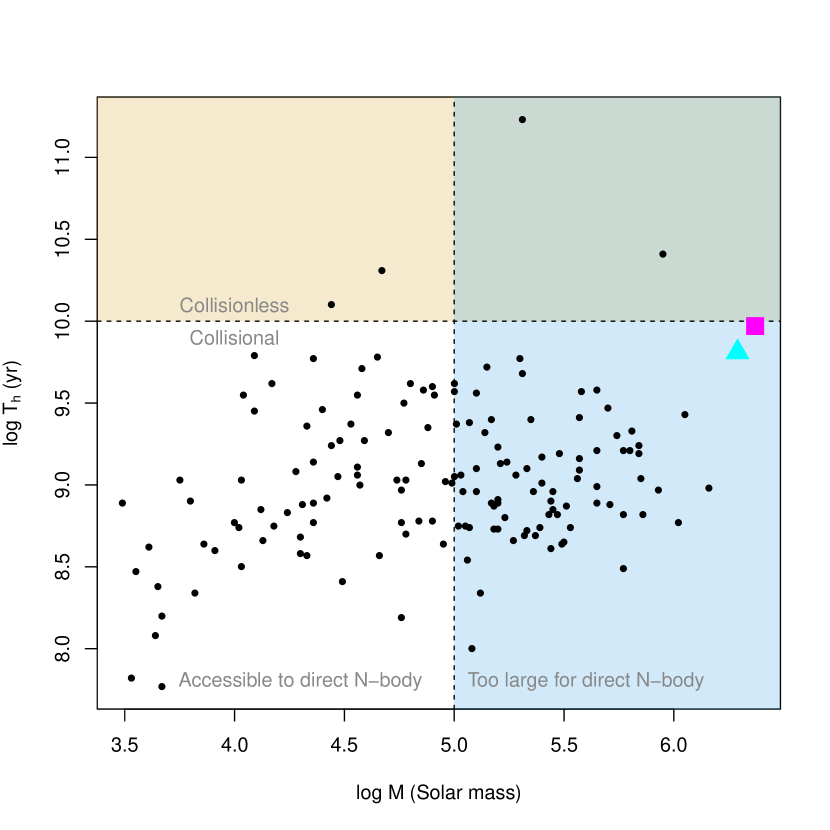
 ، فإن العناقيد النجمية ذات الكتلة فوق
، فإن العناقيد النجمية ذات الكتلة فوق  (المظللة بالأزرق الفاتح) تحتوي نجم، ولا يمكن محاكاتها إلا بجهد حاسوبي كبير وبعدد محدود من التحقيقات، ولا سيما إذا أدرج كسر ثنائيات واقعي، بخلاف الأنظمة الأصغر (المنطقة المظللة بالرمادي) الواقعة تماما ضمن قدرات أكواد
(المظللة بالأزرق الفاتح) تحتوي نجم، ولا يمكن محاكاتها إلا بجهد حاسوبي كبير وبعدد محدود من التحقيقات، ولا سيما إذا أدرج كسر ثنائيات واقعي، بخلاف الأنظمة الأصغر (المنطقة المظللة بالرمادي) الواقعة تماما ضمن قدرات أكواد  -جسم المباشرة الحالية. أما العناقيد النجمية ذات زمن استرخاء يتجاوز العمر النموذجي للعناقيد الكروية ( Gyr) فيمكن عدها عديمة التصادم، وهي مظللة بلوني الخوخي والأخضر الداكن. ووفق هذا التعريف، فإن Omega Centauri وM
-جسم المباشرة الحالية. أما العناقيد النجمية ذات زمن استرخاء يتجاوز العمر النموذجي للعناقيد الكروية ( Gyr) فيمكن عدها عديمة التصادم، وهي مظللة بلوني الخوخي والأخضر الداكن. ووفق هذا التعريف، فإن Omega Centauri وM تصادميان قليلا فقط، لكنهما بوضوح غير متاحين للنمذجة عبر محاكاة
تصادميان قليلا فقط، لكنهما بوضوح غير متاحين للنمذجة عبر محاكاة  -جسم المباشرة.
-جسم المباشرة. نبيّن في الشكل 1 أن جزءا كبيرا من العناقيد الكروية في درب التبانة يقع في النظام التصادمي ويحتوي في الوقت نفسه عددا كبيرا بما يكفي من النجوم ليجعل النمذجة التفصيلية القائمة على محاكاة  -جسم المباشرة غير عملية، خاصة عند أخذ الحاجة إلى الحصول على عدد ذي دلالة من تحقيقات النظام نفسه في الحسبان.
-جسم المباشرة غير عملية، خاصة عند أخذ الحاجة إلى الحصول على عدد ذي دلالة من تحقيقات النظام نفسه في الحسبان.
توجد عدة بدائل تقريبية لمقاربة  -جسم المباشرة11
1
لاحظ أن حلول
-جسم المباشرة11
1
لاحظ أن حلول  -جسم المباشرة نفسها ليست دقيقة تماما، بسبب الطبيعة الفوضوية للمسألة (انظر مثلا Di Cintio and Casetti 2019, 2020 والمراجع الواردة فيها) وبسبب الدقة المحدودة للحسابات العددية المستخدمة (انظر مثلا Breen et al., 2019, الذي يقترح أيضا مخطط محاكاة بديلا مبتكرا.). لا تشاركها كلفتها الحاسوبية الباهظة (see Heggie, 2016, for an excellent review).
ولعل عائلة الأكواد المسماة Monte-Carlo، التي تحل في جوهرها معادلة Fokker-Planck (Hénon, 1971b, a, 1975; Stodolkiewicz, 1982, 1986; Joshi et al., 2000; Freitag and Benz, 2001; Giersz, 2001; Freitag and Benz, 2002; Giersz, 2006; Pattabiraman et al., 2013; Giersz et al., 2013; Hypki and Giersz, 2013; Pijloo et al., 2015; Rodriguez et al., 2018; Sollima and Ferraro, 2019)، هي أنجح هذه البدائل على الأرجح. غير أن محاكاة Monte-Carlo محدودة عموما بالأنظمة ذات التناظر الكروي، باستثناء بارز هو الكود الذي طوره Vasiliev (2015)، وهو للأسف غير واسع الاستخدام. وقد تبيّن، من بين مسائل أخرى، أن هذا القيد يؤدي إلى فروق بين
-جسم المباشرة نفسها ليست دقيقة تماما، بسبب الطبيعة الفوضوية للمسألة (انظر مثلا Di Cintio and Casetti 2019, 2020 والمراجع الواردة فيها) وبسبب الدقة المحدودة للحسابات العددية المستخدمة (انظر مثلا Breen et al., 2019, الذي يقترح أيضا مخطط محاكاة بديلا مبتكرا.). لا تشاركها كلفتها الحاسوبية الباهظة (see Heggie, 2016, for an excellent review).
ولعل عائلة الأكواد المسماة Monte-Carlo، التي تحل في جوهرها معادلة Fokker-Planck (Hénon, 1971b, a, 1975; Stodolkiewicz, 1982, 1986; Joshi et al., 2000; Freitag and Benz, 2001; Giersz, 2001; Freitag and Benz, 2002; Giersz, 2006; Pattabiraman et al., 2013; Giersz et al., 2013; Hypki and Giersz, 2013; Pijloo et al., 2015; Rodriguez et al., 2018; Sollima and Ferraro, 2019)، هي أنجح هذه البدائل على الأرجح. غير أن محاكاة Monte-Carlo محدودة عموما بالأنظمة ذات التناظر الكروي، باستثناء بارز هو الكود الذي طوره Vasiliev (2015)، وهو للأسف غير واسع الاستخدام. وقد تبيّن، من بين مسائل أخرى، أن هذا القيد يؤدي إلى فروق بين  -جسم المباشر وMonte-Carlo (أو أي حال لمعادلة Fokker-Planck يفترض التناظر الكروي) في وجود مجال مدي خارجي مثل مجال المجرة (Takahashi and Portegies Zwart, 2000)، باستثناء بارز هو مخطط Sollima and Mastrobuono Battisti (2014) الذي يظهر توافقا جيدا جدا مع محاكاة -جسم المباشرة ذات عند تطبيقه على GCs التي تدور في كمون مجري نقطي ثابت.
-جسم المباشر وMonte-Carlo (أو أي حال لمعادلة Fokker-Planck يفترض التناظر الكروي) في وجود مجال مدي خارجي مثل مجال المجرة (Takahashi and Portegies Zwart, 2000)، باستثناء بارز هو مخطط Sollima and Mastrobuono Battisti (2014) الذي يظهر توافقا جيدا جدا مع محاكاة -جسم المباشرة ذات عند تطبيقه على GCs التي تدور في كمون مجري نقطي ثابت.
في هذا العمل، (الأول في سلسلة من ثلاث ورقات) نقدم مخطط محاكاة جديدا، وهو كود التصادم متعدد الجسيمات للأنظمة النجمية الكثيفة (ويشار إليه فيما يلي بـ mpcdss)، يجمع بين تدرج شبه خطي في التعقيد الحاسوبي مع عدد الجسيمات والقدرة على نمذجة تشكيلات ذات هندسات اعتباطية. وهنا نقدم بنية الكود وسلسلة أولى من الاختبارات على التطور الديناميكي لـ GCs، من دون إدراج وحدات التطور النجمي، ممهّدين الطريق لتطبيقه على أكثر عنقودين نجميين كتلة في درب التبانة22
2
باستثناء NSC (Walcher et al., 2005; Misgeld and Hilker, 2011; Neumayer, 2017) الذي يمكن من حيث المبدأ محاكاته أيضا بـ mpcdss، وقد دُرس كذلك بمحاكاة  -جسم المباشرة (Agarwal and Milosavljević 2011; Perets and Mastrobuono-Battisti 2014) في سياق سيناريو التراكم المتكرر المسمى (Antonini et al. 2012; Arca-Sedda and Capuzzo-Dolcetta 2014).، وهما M54 وOmega Centauri.
ويظهر كلا العنقودين تشتتا في الفلزية (Sarajedini and Layden, 1995; Lee et al., 1999)، مما يشير إلى تاريخ ديناميكي غير بسيط قد يتضمن اندماجا واحدا أو أكثر (انظر مثلا Cole et al., 2017; Alfaro-Cuello et al., 2020b, a) ربما لا يزال يؤثر في الخواص الرصدية الحالية (Amaro-Seoane et al., 2013; Pasquato and Chung, 2016)، كما أن لهما كتلا كبيرة تجعلهما خارج حدود ما يمكن نمذجته حاليا بمحاكاة
-جسم المباشرة (Agarwal and Milosavljević 2011; Perets and Mastrobuono-Battisti 2014) في سياق سيناريو التراكم المتكرر المسمى (Antonini et al. 2012; Arca-Sedda and Capuzzo-Dolcetta 2014).، وهما M54 وOmega Centauri.
ويظهر كلا العنقودين تشتتا في الفلزية (Sarajedini and Layden, 1995; Lee et al., 1999)، مما يشير إلى تاريخ ديناميكي غير بسيط قد يتضمن اندماجا واحدا أو أكثر (انظر مثلا Cole et al., 2017; Alfaro-Cuello et al., 2020b, a) ربما لا يزال يؤثر في الخواص الرصدية الحالية (Amaro-Seoane et al., 2013; Pasquato and Chung, 2016)، كما أن لهما كتلا كبيرة تجعلهما خارج حدود ما يمكن نمذجته حاليا بمحاكاة  -جسم المباشرة ”الصريحة”.
-جسم المباشرة ”الصريحة”.
تنتظم هذه الورقة على النحو الآتي: في القسم 2 نقدم الطرائق العددية المستخدمة في mpcdss لحساب مجال الجاذبية ومعالجة التصادمات ونشر مسارات جسيمات المحاكاة، ونناقش كفاءة تنفيذنا. وفي القسم 3 نقارن مجموعة من محاكاة الاختبار لتبخر GCs الأصغر تصادميا باستخدام mpcdss وكود  -جسم المباشر الأحدث nbody6 (Aarseth 2003; Nitadori and Aarseth 2012). وفي القسم 4 نعرض نتائج المحاكاة العددية لانهيار اللب والفصل الكتلي. وفي القسم 5 نناقش نتائجنا، وأخيرا يلخص القسم 6 نتائجنا.
-جسم المباشر الأحدث nbody6 (Aarseth 2003; Nitadori and Aarseth 2012). وفي القسم 4 نعرض نتائج المحاكاة العددية لانهيار اللب والفصل الكتلي. وفي القسم 5 نناقش نتائجنا، وأخيرا يلخص القسم 6 نتائجنا.
2 نظرة عامة على الطريقة العددية
2.1 التصادمات العشوائية: طريقة التصادم متعدد الجسيمات (MPC)
في كودنا العددي نعالج التآثرات التصادمية بين النجوم باستخدام ما يسمى بطريقة التصادم متعدد الجسيمات (ويشار إليها فيما يلي بـ MPC). وقد قدمت MPC أصلا على يد Malevanets and Kapral (1999, 2004) في سياق الهيدروديناميك العددي لمحاكاة الموائع الميزوسكوبية (مثل البوليمرات في المحلول والموائع الغروية). وقد ثبت أن الطريقة تنتج ديناميكيات ثابتة غاليليا، وأن معادلات Navier-Stokes تستعاد في حد الاستمرار، وأن الاسترخاء نحو الاتزان الثرموديناميكي يُنمذج بصورة صحيحة (انظر Gompper et al., 2009, لمراجعة مفصلة).
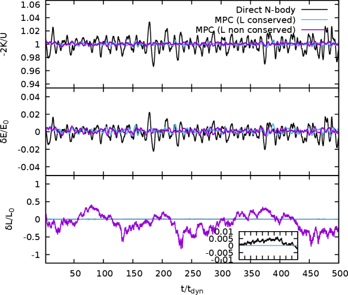
 (اللوحة العليا)، وتذبذبات الطاقة الكلية
(اللوحة العليا)، وتذبذبات الطاقة الكلية  بوحدات الطاقة الابتدائية (اللوحة الوسطى)، ومعيار الزخم الزاوي الكلي
بوحدات الطاقة الابتدائية (اللوحة الوسطى)، ومعيار الزخم الزاوي الكلي  (اللوحة السفلى) للشروط الابتدائية نفسها في نموذج Plummer متساوي الخواص بعدد جسيمات
(اللوحة السفلى) للشروط الابتدائية نفسها في نموذج Plummer متساوي الخواص بعدد جسيمات  ، مطورة بكود
، مطورة بكود  -جسم المباشر (خطوط سوداء)، وبمخطط MPC الحافظ للزخم الزاوي بدقة (خطوط زرقاء فاتحة)، وبدوران MPC الأسرع ذي المحور العشوائي (خطوط أرجوانية). تحمل الشروط الابتدائية زخما زاويا طفيفا نتيجة إجراء التهيئة العشوائية لسرعات النجوم.
-جسم المباشر (خطوط سوداء)، وبمخطط MPC الحافظ للزخم الزاوي بدقة (خطوط زرقاء فاتحة)، وبدوران MPC الأسرع ذي المحور العشوائي (خطوط أرجوانية). تحمل الشروط الابتدائية زخما زاويا طفيفا نتيجة إجراء التهيئة العشوائية لسرعات النجوم.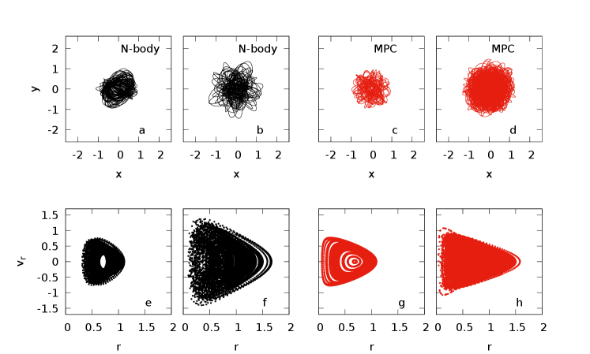
 جسيم متساوي الكتلة، مطورين بكود
جسيم متساوي الكتلة، مطورين بكود  -جسم (اللوحتان a وb، خطوط سوداء) وبـ mpcdss (اللوحتان c وd، خطوط حمراء). وتعرض اللوحات السفلى (e,f,g,h) المقاطع الطورية-المكانية الموافقة في الفضاء الجزئي .
-جسم (اللوحتان a وb، خطوط سوداء) وبـ mpcdss (اللوحتان c وd، خطوط حمراء). وتعرض اللوحات السفلى (e,f,g,h) المقاطع الطورية-المكانية الموافقة في الفضاء الجزئي .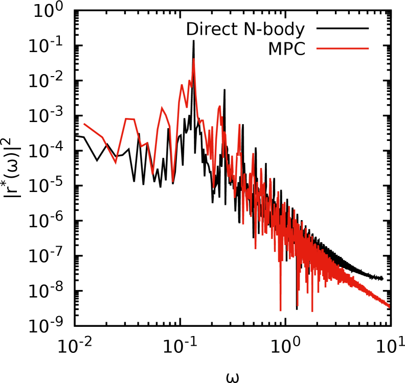
 لمدارات نموذجية مستخرجة من محاكاة
لمدارات نموذجية مستخرجة من محاكاة  -جسم (منحنى أحمر) ومحاكاة MPC (منحنى أسود) لنظام يحوي
-جسم (منحنى أحمر) ومحاكاة MPC (منحنى أسود) لنظام يحوي  جسيم متساوي الكتلة.
جسيم متساوي الكتلة.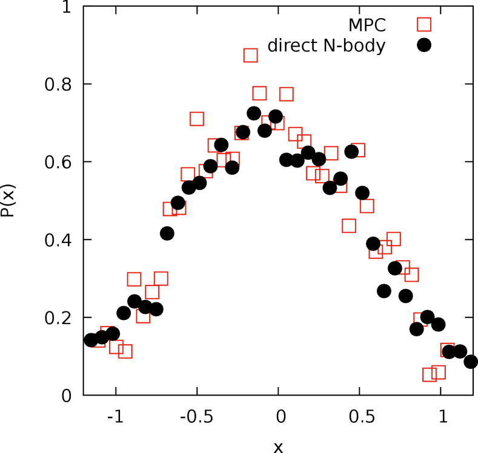
 ، أي ، لجسيم كاشف يبدأ من الشرط الابتدائي نفسه في نموذج Plummer ذي
، أي ، لجسيم كاشف يبدأ من الشرط الابتدائي نفسه في نموذج Plummer ذي  ، مطور بطريقة
، مطور بطريقة  -جسم المباشرة (دوائر سوداء) وبطريقة MPC (مربعات حمراء).
-جسم المباشرة (دوائر سوداء) وبطريقة MPC (مربعات حمراء).حديثا، استُخدمت تقنيات MPC أيضا في فيزياء البلازما لمعالجة مسائل انتقال الحرارة في نماذج مختزلة في 1D (Di Cintio et al. 2015; Ciraolo et al. 2018; Lepri et al. 2019) و2D (Di Cintio et al. 2017b, a, 2018).
يتناوب مخطط MPC بين خطوة انتقال حر (تقابل التطور غير التصادمي) وخطوة تصادم. وفي ثلاثة أبعاد مكانية، تتمثل خطوة التصادم في تدوير متجهات سرعة الجسيمات في إطار مركز الكتلة لكل خلية33
3
في التنفيذ الأصلي لكود البلازما الهجين PIC-MPC، تكون بنية الخلايا هي نفسها المستخدمة في روتينات حال Maxwell لحساب المجالات الكهرومغناطيسية. قُسم إليها مجال المحاكاة.
في بداية خطوة التصادم يقيّم الكود في كل خلية سرعة مركز الكتلة (c.o.m.)
| (1) |
والسرعات النسبية . وبعد ذلك، تُسحب لكل خلية محور عشوائي وزاوية دوران  من توزيعات منتظمة. عند هذه المرحلة، تُدار المتجهات حول
من توزيعات منتظمة. عند هذه المرحلة، تُدار المتجهات حول  بمقدار
بمقدار  ثم تُحوّل عائدة إلى إطار المحاكاة، بحيث تكون السرعة الجديدة للجسيم
ثم تُحوّل عائدة إلى إطار المحاكاة، بحيث تكون السرعة الجديدة للجسيم  في الخلية
في الخلية 
 |
(2) |
حيث إن و هما مركبتا السرعة النسبية العمودية والموازية لـ  ، على التوالي.
، على التوالي.
تحفظ هذه العملية بدقة الطاقة الحركية الكلية  والمركبات الثلاث للزخم في الخلية
والمركبات الثلاث للزخم في الخلية  (انظر مثلا Ryder 2005; Di Cintio et al. 2017b للبرهان الصارم). وبإدخال قيد على زوايا الدوران
(انظر مثلا Ryder 2005; Di Cintio et al. 2017b للبرهان الصارم). وبإدخال قيد على زوايا الدوران  ، نحفظ مركبة من متجه الزخم الزاوي للخلية
، نحفظ مركبة من متجه الزخم الزاوي للخلية  بتعريف بحيث
بتعريف بحيث
| (3) |
حيث
![\begin{equation}\label{ab}
a_i=\sum_{j=1}^{N_i}\left[\mathbf{r}_j\times(\mathbf{v}_j-\mathbf{u}_i)\right]|_z;\quad b_i=\sum_{j=1}^{N_i}\mathbf{r}_j\cdot(\mathbf{v}_j-\mathbf{u}_i).
\end{equation}](equations/eq_0071.svg) |
(4) |
في الصيغ أعلاه، تمثل متجهات مواضع الجسيمات، وتعني الكتابة أننا نأخذ (من دون فقدان للعمومية) مركبة المتجه الموازية للمحور  من نظام إحداثيات المحاكاة، بحيث تُحفظ المركبة
من نظام إحداثيات المحاكاة، بحيث تُحفظ المركبة  من الزخم الزاوي للخلية.
من الزخم الزاوي للخلية.
لاحظ أنه في الأنظمة ثنائية الأبعاد تماما تصبح المعادلة (2)
| (5) |
حيث إن الآن هي مصفوفة دوران 2D بزاوية  ، والتي إذا اختيرت وفق المعادلتين (3،4) فإنها تضمن حفظ الزخم الزاوي السلمي (انظر Di Cintio et al. 2017b) إضافة إلى و
، والتي إذا اختيرت وفق المعادلتين (3،4) فإنها تضمن حفظ الزخم الزاوي السلمي (انظر Di Cintio et al. 2017b) إضافة إلى و . ولاحظ أيضا أن حفظ الزخم الزاوي الكلي يمكن تحقيقه حتى في الأنظمة ثلاثية الأبعاد باختيار
. ولاحظ أيضا أن حفظ الزخم الزاوي الكلي يمكن تحقيقه حتى في الأنظمة ثلاثية الأبعاد باختيار  موازيا لاتجاه متجه الزخم الزاوي للخلية ، وبأخذ، في تعريف ، مركبة المتجه الموازية للأخير. وفي المحاكاة المعروضة هنا، نقتصر على مخطط الدوران القياسي الذي تُحفظ فيه مركبة واحدة فقط من الزخم الزاوي الكلي، لأنه أقل استهلاكا للوقت بكثير إذ لا يتطلب تحديد اتجاه متجه الزخم الزاوي (الشبيه بالمتجه) خلية فخلية.
موازيا لاتجاه متجه الزخم الزاوي للخلية ، وبأخذ، في تعريف ، مركبة المتجه الموازية للأخير. وفي المحاكاة المعروضة هنا، نقتصر على مخطط الدوران القياسي الذي تُحفظ فيه مركبة واحدة فقط من الزخم الزاوي الكلي، لأنه أقل استهلاكا للوقت بكثير إذ لا يتطلب تحديد اتجاه متجه الزخم الزاوي (الشبيه بالمتجه) خلية فخلية.
بما أن تواتر التصادمات في GCs يعتمد بقوة على القيم المحلية للكثافة النجمية وتشتت السرعات، فإننا نربط خطوة MPC باحتمال يعتمد على الخلية ويمثل الدرجة المحلية للتصادمية. ونعرّف أولا احتمال MPC المعتمد على الخلية كما يلي
| (6) |
حيث إن  هي الخطوة الزمنية، و متوسط كثافة عدد النجوم، و و متوسط كتلة الجسيمات وتشتت السرعات في الخلية على التوالي، و دالة الخطأ القياسية. ويعرّف لوغاريتم Coulomb المعتمد على الخلية بأنه
هي الخطوة الزمنية، و متوسط كثافة عدد النجوم، و و متوسط كتلة الجسيمات وتشتت السرعات في الخلية على التوالي، و دالة الخطأ القياسية. ويعرّف لوغاريتم Coulomb المعتمد على الخلية بأنه
| (7) |
مع كون  طول المقياس النموذجي للنظام. وفي التعبير أعلاه تكون
طول المقياس النموذجي للنظام. وفي التعبير أعلاه تكون  ثابتا عديم الأبعاد مثبتا عند .
ثابتا عديم الأبعاد مثبتا عند .
بعد تقييم المعادلة (6) في كل خلية، يُسحب عدد عشوائي من توزيع منتظم في المجال ، ويطبق التصادم متعدد الجسيمات على جميع الخلايا التي تحقق . وبهذه الطريقة، تكون الجسيمات في الخلايا ذات تواتر التصادم الأعلى أكثر عرضة للخضوع لخطوة MPC.
لاحظ أن تطبيق مخطط MPC يفرض قيدا إضافيا على اختيار خطوة زمن المحاكاة  . وبوجه خاص، إذا كانت هذه الأخيرة قصيرة جدا مقارنة بزمن عبور خلية معينة (أي الزمن الذي يستغرقه جسيم اختباري يتحرك بالسرعة المحلية الوسطية لعبور الخلية) فقد تُبالغ التصادمات في تقديرها. وبالعكس، إذا كانت
. وبوجه خاص، إذا كانت هذه الأخيرة قصيرة جدا مقارنة بزمن عبور خلية معينة (أي الزمن الذي يستغرقه جسيم اختباري يتحرك بالسرعة المحلية الوسطية لعبور الخلية) فقد تُبالغ التصادمات في تقديرها. وبالعكس، إذا كانت  كبيرة جدا فقد لا تقضي بعض الجسيمات السريعة وقتا كافيا في الخلايا ذات التصادمية الكبيرة (أي ذات الكثافة المحلية العالية)، فلا تتعرض فعليا للتصادمات.
كبيرة جدا فقد لا تقضي بعض الجسيمات السريعة وقتا كافيا في الخلايا ذات التصادمية الكبيرة (أي ذات الكثافة المحلية العالية)، فلا تتعرض فعليا للتصادمات.
2.2 الديناميكيات الحتمية
تحاكى الديناميكيات الجماعية للأنظمة باستخدام مخطط جسيم-شبكة معياري إلى حد بعيد (انظر مثلا Hockney and Eastwood 1988) يحل معادلة Poisson
| (8) |
على شبكة كروية في الإحداثيات القطبية ويستوفي عند موضع كل جسيم .
تُحل معادلات الحركة بين خطوتي MPC بمخطط leapfrog معياري من الرتبة الثانية بخطوة زمنية ثابتة (انظر مثلا McLachlan and Atela 1992) من رتبة  بوحدات زمن العبور الابتدائي للنظام
بوحدات زمن العبور الابتدائي للنظام  (انظر المعادلة 12 أدناه). وفي المحاكاة الأولية المعروضة في هذا العمل، ومن أجل تسريع الحسابات أكثر، نقيّم فقط المركبة الشعاعية لمجال الجاذبية بدلا من حل المعادلة (8)، بحيث تصبح معادلات الحركة عمليا
(انظر المعادلة 12 أدناه). وفي المحاكاة الأولية المعروضة في هذا العمل، ومن أجل تسريع الحسابات أكثر، نقيّم فقط المركبة الشعاعية لمجال الجاذبية بدلا من حل المعادلة (8)، بحيث تصبح معادلات الحركة عمليا
| (9) |
حيث إن هي الكتلة داخل الإحداثي الشعاعي للجسيمات . وبذلك، يمكن عند الحاجة الحصول على الكمون على الجسيم  كما يلي
كما يلي
| (10) |
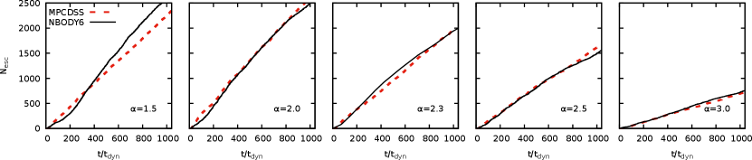
 بوصفه دالة في الزمن بوحدات الزمن الديناميكي
بوصفه دالة في الزمن بوحدات الزمن الديناميكي  لنموذج Plummer مع وطيف كتلي بقانون قوة مع، من اليسار إلى اليمين،
لنموذج Plummer مع وطيف كتلي بقانون قوة مع، من اليسار إلى اليمين،  و2.0 و2.3 و2.5 و3.0 عند تطويره بـ nbody6 (خطوط متقطعة) وبـ mpcdss (خطوط متصلة).
و2.0 و2.3 و2.5 و3.0 عند تطويره بـ nbody6 (خطوط متقطعة) وبـ mpcdss (خطوط متصلة).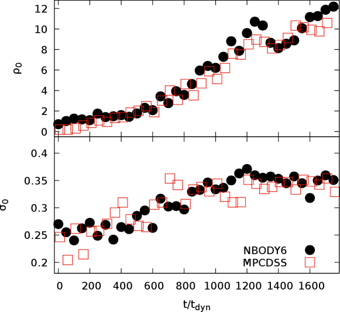
 -جسم (رموز فارغة) ومحاكاة MPC (رموز مملوءة)، للنموذج ذي
-جسم (رموز فارغة) ومحاكاة MPC (رموز مملوءة)، للنموذج ذي  في الشكل 6. أحجام الرموز من رتبة الخطأ المتوسط (Poissonian) في عد الجسيمات في كلا الرسمين.
في الشكل 6. أحجام الرموز من رتبة الخطأ المتوسط (Poissonian) في عد الجسيمات في كلا الرسمين.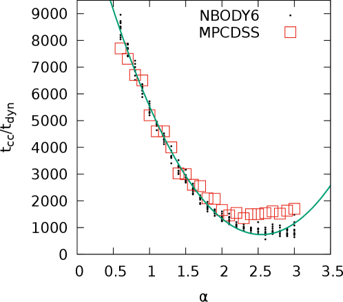
 بوصفه دالة في أس طيف الكتل
بوصفه دالة في أس طيف الكتل  لمحاكاة MPC (مربعات حمراء فارغة) ومحاكاة
لمحاكاة MPC (مربعات حمراء فارغة) ومحاكاة  -جسم (دوائر سوداء صغيرة). أضيف ملاءمة قطع مكافئ لمحاكاة
-جسم (دوائر سوداء صغيرة). أضيف ملاءمة قطع مكافئ لمحاكاة  -جسم (خط أخضر سميك). وتقع نتيجة MPC عموما ضمن المجال الذي تغطيه تحقيقات
-جسم (خط أخضر سميك). وتقع نتيجة MPC عموما ضمن المجال الذي تغطيه تحقيقات  -جسم المباشرة، باستثناء بضع قيم من
-جسم المباشرة، باستثناء بضع قيم من  عند الطرف العالي، حيث يحدث انهيار اللب أبكر في محاكاة
عند الطرف العالي، حيث يحدث انهيار اللب أبكر في محاكاة  -جسم المباشرة.
-جسم المباشرة.بعد فرز الإحداثيات الشعاعية لجميع الجسيمات (انظر مثلا Pattabiraman et al. 2013; Rodriguez et al. 2018) كما في أكواد Monte-Carlo القياسية.
مع هذه الافتراضات يُحفظ التناظر الكروي الابتدائي للنموذج، إذ لا يمكن أن تحدث لااستقرارية المدار الشعاعي (Ciotti et al. 2007)، وإذا عُطلت خطوة التصادم، احتفظ كل مدار جسيمي بمستواه الأصلي وحُفظت جميع متجهات الزخم الزاوي منفردة.
3 مقارنة مع  -جسم المباشر
-جسم المباشر
قد يبدو في البداية أن إدخال آلية عشوائية إلى حد ما للتشتت بين مدارات الجسيمات المنفردة عبر مخطط MPC يولد فروقا كبيرة في السلوك الديناميكي للمدار المطور بـ mpcdss مقارنة بمكاملات  -جسم المباشرة القياسية.
-جسم المباشرة القياسية.
3.1 قوانين الحفظ والبنية المدارية
كاختبار أول لموثوقية محاكاة MPC، طورنا أنظمة صغيرة تحوي جسيم متساوي الكتلة بكود  -جسم المباشر nbody6 وبـ mpcdss، وقارنا تطور نسبة الفيريال (حيث إن
-جسم المباشر nbody6 وبـ mpcdss، وقارنا تطور نسبة الفيريال (حيث إن  هي الطاقة الحركية الكلية و الطاقة الكامنة الكلية)، وتذبذبات الطاقة الكلية والزخم الزاوي و (حيث إن
هي الطاقة الحركية الكلية و الطاقة الكامنة الكلية)، وتذبذبات الطاقة الكلية والزخم الزاوي و (حيث إن  و
و هما القيمتان الابتدائيتان للطاقة ومعيار الزخم الزاوي، على التوالي) كما تحلها الطريقتان لشروط ابتدائية متوازنة ومتساوية الخواص متطابقة. وإضافة إلى ذلك، درسنا أيضا بنية مدارات جسيمات كاشفة منفردة في كلتا الطريقتين العدديتين.
هما القيمتان الابتدائيتان للطاقة ومعيار الزخم الزاوي، على التوالي) كما تحلها الطريقتان لشروط ابتدائية متوازنة ومتساوية الخواص متطابقة. وإضافة إلى ذلك، درسنا أيضا بنية مدارات جسيمات كاشفة منفردة في كلتا الطريقتين العدديتين.
أُعدت النماذج المستخدمة في مجموعتي المحاكاة على النحو الآتي. اعتبرنا نموذجا كرويا معزولا ومتساوي الخواص ذا توزيع كثافة Plummer (1911)
| (11) |
بكتلة كلية  ونصف قطر مقياسي
ونصف قطر مقياسي  ، مرتبط بنصف قطر نصف الكتلة بالعلاقة . وفي حالتي
، مرتبط بنصف قطر نصف الكتلة بالعلاقة . وفي حالتي  -جسم وMPC، طُورت الأنظمة حتى
-جسم وMPC، طُورت الأنظمة حتى  زمن ديناميكي معرّف بـ
زمن ديناميكي معرّف بـ
| (12) |
بخطوة زمنية ثابتة ومع إهمال التطور النجمي وتكون الثنائيات (بحيث يمثل كل جسيم محاكاة نجما منفردا يحتفظ بكتلته طوال التشغيل كله). ومع هذا الاختيار لـ  نحافظ على حفظ جيد للطاقة مع تجنب المبالغة في تقدير التصادمات العشوائية في خلية معينة.
نحافظ على حفظ جيد للطاقة مع تجنب المبالغة في تقدير التصادمات العشوائية في خلية معينة.
وكمثال على حفظ حالة توازن، نعرض في الشكل 2 تطور
نسبة الفيريال وكذلك تذبذبات الطاقة الكلية والزخم الزاوي  و لنموذج Plummer (1911) متوازن ومتساوي الخواص بعدد جسيمات ، مطور بكود
و لنموذج Plummer (1911) متوازن ومتساوي الخواص بعدد جسيمات ، مطور بكود  -جسم المباشر، وبنسختي mpcdss مع مخطط حفظ الزخم الزاوي ومن دونه. أجرينا المحاكاة حتى فقط حتى لا تؤثر التصادمات تأثيرا محسوسا في خواص النموذج. وفي جميع الحالات استخدمنا الخطوة الزمنية الثابتة نفسها
-جسم المباشر، وبنسختي mpcdss مع مخطط حفظ الزخم الزاوي ومن دونه. أجرينا المحاكاة حتى فقط حتى لا تؤثر التصادمات تأثيرا محسوسا في خواص النموذج. وفي جميع الحالات استخدمنا الخطوة الزمنية الثابتة نفسها  ومخطط انتشار من الرتبة الثانية.
ومخطط انتشار من الرتبة الثانية.
من اللافت أن التوازن الفيريالي في محاكاتي MPC يُحفظ بتذبذبات أصغر مقارنة بتكامل  -جسم المباشر. ويرجع ذلك إلى أن التناظر الكروي المفروض والكمون الأكثر نعومة القائم على الشبكة في محاكاة mpcdss يولدان عموما تذبذبات قوة أصغر على الجسيمات (لاختيار معين لـ
-جسم المباشر. ويرجع ذلك إلى أن التناظر الكروي المفروض والكمون الأكثر نعومة القائم على الشبكة في محاكاة mpcdss يولدان عموما تذبذبات قوة أصغر على الجسيمات (لاختيار معين لـ  ) مقارنة بحساب قوة مباشر. وبناء على ذلك، لا تظهر الطاقة الكلية إلا تذبذبات صغيرة ، تصل إلى
) مقارنة بحساب قوة مباشر. وبناء على ذلك، لا تظهر الطاقة الكلية إلا تذبذبات صغيرة ، تصل إلى  فقط لمحاكاة MPC، بخلاف محاكاة
فقط لمحاكاة MPC، بخلاف محاكاة  -جسم المباشرة حيث تكون من رتبة منذ الأزمنة المبكرة. وعند استخدام مخطط MPC مع فرض حفظ الزخم الزاوي، تكون تذبذباته ، لهذا الاختيار الخاص من الشروط الابتدائية وإعداد المحاكاة، من رتبة ، في حين تكون من رتبة
-جسم المباشرة حيث تكون من رتبة منذ الأزمنة المبكرة. وعند استخدام مخطط MPC مع فرض حفظ الزخم الزاوي، تكون تذبذباته ، لهذا الاختيار الخاص من الشروط الابتدائية وإعداد المحاكاة، من رتبة ، في حين تكون من رتبة  لمحاكاة
لمحاكاة  -جسم المباشرة (انظر الشكل الداخلي في اللوحة السفلى من الشكل 2). وعندما لا ينفذ حفظ الزخم الزاوي المحلي في خطوة MPC، قد يتعرض الزخم الزاوي الكلي لتذبذبات عنيفة
-جسم المباشرة (انظر الشكل الداخلي في اللوحة السفلى من الشكل 2). وعندما لا ينفذ حفظ الزخم الزاوي المحلي في خطوة MPC، قد يتعرض الزخم الزاوي الكلي لتذبذبات عنيفة  من رتبة 0.5 كلما صغرت القيمة الابتدائية للزخم الزاوي . ومن اللافت أن كسر حفظ الزخم الزاوي لا يؤثر تأثيرا محسوسا في حفظ الطاقة ولا في التوازن الفيريالي.
من رتبة 0.5 كلما صغرت القيمة الابتدائية للزخم الزاوي . ومن اللافت أن كسر حفظ الزخم الزاوي لا يؤثر تأثيرا محسوسا في حفظ الطاقة ولا في التوازن الفيريالي.
أما فيما يتعلق بسلوك مدارات الجسيمات المنفردة، فمن المدهش أن استخدام خطوة MPC لحل العمليات التصادمية لا يغير نوعيا سلوك المدارات نفسها مقارنة بمحاكاة  -جسم القياسية. ففي اللوحات العليا من الشكل 3 نعرض الإسقاطات على المستوى
-جسم القياسية. ففي اللوحات العليا من الشكل 3 نعرض الإسقاطات على المستوى  لمدارين في نموذج Plummer مع مدمجين بكود
لمدارين في نموذج Plummer مع مدمجين بكود  -جسم مباشر (اللوحتان a وb، خطوط سوداء) وبـ mpcdss (اللوحتان c وd، خطوط حمراء). ونظرا إلى أن الجسيمات تبقى دائما محصورة ضمن أقل من نصفي قطر نصف الكتلة، فإنها تتعرض في كلتا الحالتين لعدة ”لقاءات قريبة” ومن ثم تخضع لتغيرات كبيرة في ميل المدار وتواتر المبادرة. وتؤدي ديناميكيات
-جسم مباشر (اللوحتان a وb، خطوط سوداء) وبـ mpcdss (اللوحتان c وd، خطوط حمراء). ونظرا إلى أن الجسيمات تبقى دائما محصورة ضمن أقل من نصفي قطر نصف الكتلة، فإنها تتعرض في كلتا الحالتين لعدة ”لقاءات قريبة” ومن ثم تخضع لتغيرات كبيرة في ميل المدار وتواتر المبادرة. وتؤدي ديناميكيات  -جسم المباشرة وMPC إلى درجة كبيرة من ”انتشار” الفضاء الطوري، حيث تستكشف الجسيمات كامل المنطقة المتاحة طاقيا كما هو مبين في اللوحات السفلى من الشكل 3.
-جسم المباشرة وMPC إلى درجة كبيرة من ”انتشار” الفضاء الطوري، حيث تستكشف الجسيمات كامل المنطقة المتاحة طاقيا كما هو مبين في اللوحات السفلى من الشكل 3.
علاوة على ذلك، واتباعا لـ Di Cintio and Casetti (2019)، درسنا أيضا، لطيف واسع من الشروط الابتدائية، أطياف Fourier للإحداثي الشعاعي  لمدارات جسيمية منفردة. وبوجه عام، لا تغير قاعدة التصادم العشوائية بنية طيف مدار معين، المحصل من الشرط الابتدائي نفسه، تغيرا مهما مقارنة بتطور
لمدارات جسيمية منفردة. وبوجه عام، لا تغير قاعدة التصادم العشوائية بنية طيف مدار معين، المحصل من الشرط الابتدائي نفسه، تغيرا مهما مقارنة بتطور  -جسم المباشر. نعرض في الشكل 4 مربع المعيار للإحداثي الشعاعي
-جسم المباشر. نعرض في الشكل 4 مربع المعيار للإحداثي الشعاعي  لجسيم منتشر في نموذج Plummer نفسه مع
لجسيم منتشر في نموذج Plummer نفسه مع  باستخدام مقاربتي المحاكاة، الموافق للوحتين a وc من الشكل 3. ومن اللافت أن بنية التواتر الأساسي (وجزءا كبيرا من التوافقيات الأعلى عند قيم أكبر لـ
باستخدام مقاربتي المحاكاة، الموافق للوحتين a وc من الشكل 3. ومن اللافت أن بنية التواتر الأساسي (وجزءا كبيرا من التوافقيات الأعلى عند قيم أكبر لـ  ) محفوظة، مما يدفع إلى الافتراض بأن ديناميكيات MPC يمكن الوثوق بها بما يكفي حتى للأنظمة الأكبر، إذ إن إدخال عشوائية في سرعات الجسيمات يؤثر في السلوك الجماعي للنماذج (حتى عند
) محفوظة، مما يدفع إلى الافتراض بأن ديناميكيات MPC يمكن الوثوق بها بما يكفي حتى للأنظمة الأكبر، إذ إن إدخال عشوائية في سرعات الجسيمات يؤثر في السلوك الجماعي للنماذج (حتى عند  صغير نسبيا مثل
صغير نسبيا مثل  ). وإضافة إلى ذلك، وللمدارات نفسها في الشكل 4، نعرض في الشكل 5 دالة كثافة الاحتمال لإحداثيها
). وإضافة إلى ذلك، وللمدارات نفسها في الشكل 4، نعرض في الشكل 5 دالة كثافة الاحتمال لإحداثيها  ، أي
، أي  (أي توزيع المواضع على طول
(أي توزيع المواضع على طول  الذي تبلغه الجسيمات الكاشفة خلال فترة زمنية معينة) حتى . ويتطابق التوزيعان على نحو لافت، مما يؤكد التوافق العام بين البنية المدارية المنفردة في طريقتي المحاكاة. ونلاحظ أن مقارنة مشابهة مع مدارات
الذي تبلغه الجسيمات الكاشفة خلال فترة زمنية معينة) حتى . ويتطابق التوزيعان على نحو لافت، مما يؤكد التوافق العام بين البنية المدارية المنفردة في طريقتي المحاكاة. ونلاحظ أن مقارنة مشابهة مع مدارات  -جسم أُجريت أيضا لمدارات جسيمات كاشفة ضخمة نُشرت شبه تحليليا بمخططات Fokker-Planck (انظر مثلا Chatterjee et al. 2002a, b, 2003) أو بالتكامل المباشر لمعادلة Langevin (Di Cintio et al. 2020) في نماذج Plummer متساوية الكتلة ذات
-جسم أُجريت أيضا لمدارات جسيمات كاشفة ضخمة نُشرت شبه تحليليا بمخططات Fokker-Planck (انظر مثلا Chatterjee et al. 2002a, b, 2003) أو بالتكامل المباشر لمعادلة Langevin (Di Cintio et al. 2020) في نماذج Plummer متساوية الكتلة ذات  . وبوجه عام، على الأقل في النماذج المدروسة في هذه الأعمال، يحظى توزيع الإحداثيات
. وبوجه عام، على الأقل في النماذج المدروسة في هذه الأعمال، يحظى توزيع الإحداثيات  المقيم من الحل العددي لمعادلة Fokker-Planck بأفضل توافق مع نتائج محاكاة
المقيم من الحل العددي لمعادلة Fokker-Planck بأفضل توافق مع نتائج محاكاة  -جسم المباشرة، في حين تعتمد مقاربة Langevin بقوة على شكل حد الضوضاء. وتتموضع مقاربتنا MPC بين الطريقتين.
-جسم المباشرة، في حين تعتمد مقاربة Langevin بقوة على شكل حد الضوضاء. وتتموضع مقاربتنا MPC بين الطريقتين.
نلاحظ أن استخدام مخطط MPC يؤدي إلى خفض كبير في الكلفة الحاسوبية للمحاكاة مع الاحتفاظ بنتائج موثوقة بما يكفي. فعلى سبيل المثال، يستغرق تطور عنقود  حتى
حتى  بضعة أيام على محطة عمل GPU مخصصة لمحاكاة
بضعة أيام على محطة عمل GPU مخصصة لمحاكاة  -جسم المباشرة من دون تطور نجمي ومن دون خطوة زمنية تكيفية. وعند استخدام شبكة في الإحداثيات القطبية لإجراء التصادمات وشبكة شعاعية لتقييم مجال الجاذبية في تقريب أحادي القطب (انظر المعادلة 9)، تستغرق محاكاة MPC لدينا بخطوة ثابتة نحو ساعة واحدة على نواة واحدة من آلة INTEL® ذات 64 بت.
-جسم المباشرة من دون تطور نجمي ومن دون خطوة زمنية تكيفية. وعند استخدام شبكة في الإحداثيات القطبية لإجراء التصادمات وشبكة شعاعية لتقييم مجال الجاذبية في تقريب أحادي القطب (انظر المعادلة 9)، تستغرق محاكاة MPC لدينا بخطوة ثابتة نحو ساعة واحدة على نواة واحدة من آلة INTEL® ذات 64 بت.
3.2 انهيار اللب مع طيف كتل
إن أثر تعدد الجماعات الكتلية في التطور الديناميكي لـ GCs ذو أهمية أساسية. ويتيح التنفيذ الحالي لكود MPC لدينا فرصة مهمة لدراسة الأنظمة متعددة الكتل من دون إضافة تعقيد حاسوبي زائد. أجرينا مجموعة اختبارات إضافية باستخدام nbody6 وmpcdss لمحاكاة التطور حتى انهيار اللب وما بعده في نماذج Plummer ذات طيف كتل.
ومن أجل البساطة، وبدلا من استخدام دالة الكتلة متعددة الميل Kroupa (2002)، استُخرجت كتل الجسيمات في هذا العمل من دالة كتلة خالصة بقانون قوة على الصورة
| (13) |
حيث ، ويعتمد ثابت التطبيع  على نسبة الكتلة الدنيا إلى الكتلة العظمى بحيث .
على نسبة الكتلة الدنيا إلى الكتلة العظمى بحيث .
نجري محاكاة مع  لمجال من
لمجال من  يمتد من إلى
يمتد من إلى  بفواصل
بفواصل  ، وفي حالة محاكاة
، وفي حالة محاكاة  -جسم المباشرة نجري
-جسم المباشرة نجري  تحقيقات مختلفة (ببذرة مختلفة للشروط الابتدائية) لكل قيمة من
تحقيقات مختلفة (ببذرة مختلفة للشروط الابتدائية) لكل قيمة من  . وفي جميع الحالات ذات طيف الكتل التي نناقشها في هذا العمل نثبت
. وفي جميع الحالات ذات طيف الكتل التي نناقشها في هذا العمل نثبت  عند
عند  .
.
في حالتي  -جسم وMPC طُورت الأنظمة مدة
-جسم وMPC طُورت الأنظمة مدة  أزمنة ديناميكية، توافق تقريبا 20 أزمنة استرخاء ثنائية الجسم (تصادمية) لنموذج له الكتلة الكلية نفسها وعدد الجسيمات المتساوية الكتلة نفسه، معطاة بـ
أزمنة ديناميكية، توافق تقريبا 20 أزمنة استرخاء ثنائية الجسم (تصادمية) لنموذج له الكتلة الكلية نفسها وعدد الجسيمات المتساوية الكتلة نفسه، معطاة بـ
| (14) |
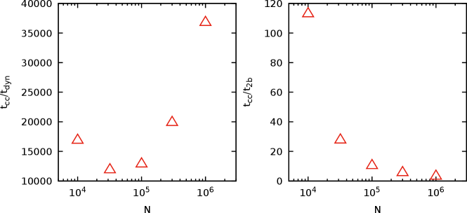
 بوحدات الزمن الديناميكي (اللوحة اليسرى) وزمن الاسترخاء (اللوحة اليمنى) لنماذج Plummer وحيدة المكون
بوحدات الزمن الديناميكي (اللوحة اليسرى) وزمن الاسترخاء (اللوحة اليمنى) لنماذج Plummer وحيدة المكون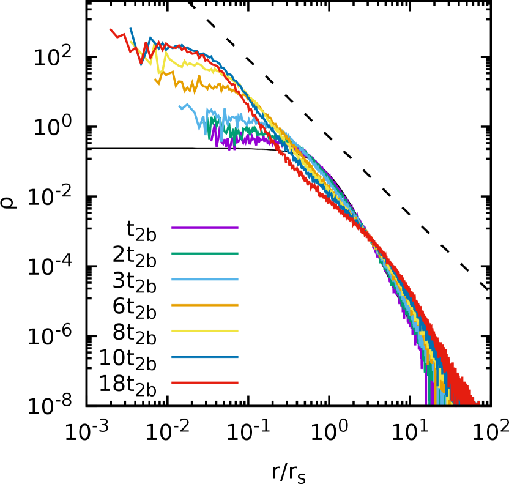
 جسيم متساوي الكتلة وتوزيع كثافة ابتدائي من نوع Plummer (خط أسود متصل رفيع) عند 2 و3 و6 و8 و10 و18 من أزمنة الاسترخاء ثنائية الجسم (خطوط ملونة). ويحدد الخط السميك المتقطع الملف النظري
جسيم متساوي الكتلة وتوزيع كثافة ابتدائي من نوع Plummer (خط أسود متصل رفيع) عند 2 و3 و6 و8 و10 و18 من أزمنة الاسترخاء ثنائية الجسم (خطوط ملونة). ويحدد الخط السميك المتقطع الملف النظري  .
.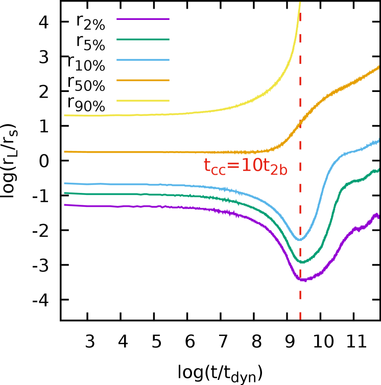
 و و
و و و
و و من العدد الكلي للجسيمات
و من العدد الكلي للجسيمات  للنموذج نفسه في الشكل 10. ويحدد الخط العمودي المتقطع زمن انهيار لب النظام
للنموذج نفسه في الشكل 10. ويحدد الخط العمودي المتقطع زمن انهيار لب النظام ومرة أخرى، وكقاعدة عامة، ثبتنا في جميع مجموعات محاكاة mpcdss الخطوة الزمنية  عند ، وأهملنا التطور النجمي ومساهمة الثنائيات44
4
لاحظ أنه في محاكاة
عند ، وأهملنا التطور النجمي ومساهمة الثنائيات44
4
لاحظ أنه في محاكاة  -جسم المباشرة، حتى إذا بدأت من دون ثنائيات، فقد تتشكل بضعة ثنائيات جديدة ديناميكيا..
-جسم المباشرة، حتى إذا بدأت من دون ثنائيات، فقد تتشكل بضعة ثنائيات جديدة ديناميكيا..
بالنسبة إلى مجموعتي المحاكاة ( -جسم وMPC)، استخرجنا وقارنا بدلالة الزمن عدد الجسيمات الهاربة
-جسم وMPC)، استخرجنا وقارنا بدلالة الزمن عدد الجسيمات الهاربة  (المعرّف بأنه عدد الجسيمات الواقعة عند بطاقة موجبة، انظر مثلا Fukushige and Heggie 2000)، والكثافة المركزية وتشتت السرعات المركزي
(المعرّف بأنه عدد الجسيمات الواقعة عند بطاقة موجبة، انظر مثلا Fukushige and Heggie 2000)، والكثافة المركزية وتشتت السرعات المركزي  و
و ، إضافة إلى دالة الكتلة في اللب.
، إضافة إلى دالة الكتلة في اللب.
نعرض في الشكل 6 التطور الزمني لعدد الجسيمات الهاربة  لاختيارات
لاختيارات  في المعادلة (13). نجد في جميع الحالات أن تطور MPC (خط متصل) يستعيد الاتجاه شبه الخطي لـ مع الزمن. غير أن بعض الفروق بين محاكاة MPC و
في المعادلة (13). نجد في جميع الحالات أن تطور MPC (خط متصل) يستعيد الاتجاه شبه الخطي لـ مع الزمن. غير أن بعض الفروق بين محاكاة MPC و -جسم تُلاحظ خصوصا عند القيم المنخفضة لـ
-جسم تُلاحظ خصوصا عند القيم المنخفضة لـ  (أي طيف كتل ”أكثر تسطحا”). ونفسر هذا الفرق بأنه أثر التصادمات الثنائية القوية بين الجسيمات الخفيفة والثقيلة، التي تُحل في كود
(أي طيف كتل ”أكثر تسطحا”). ونفسر هذا الفرق بأنه أثر التصادمات الثنائية القوية بين الجسيمات الخفيفة والثقيلة، التي تُحل في كود  -جسم مباشر لكنها تُطمس إلى حد ما في كود تصادم متعدد الجسيمات. عمليا، في النماذج ذات طيف كتل يحوي كسرا أكبر من الجسيمات الثقيلة، يزداد احتمال طرد الجسيمات الأخف بطاقة موجبة عند تعرضها للقاءات قريبة مع نجوم أثقل، مقارنة بالأنظمة ذات أطياف الكتل المتكدسة بشدة عند الكتل المنخفضة. وبما أن خطوة MPC، حتى في وجود طيف كتل، تحاكي تصادمات متعددة بين الجسيمات بحركة واحدة تؤثر في جميع جسيمات الخلية، فإن مساهمة لقاءات قليلة لكنها قوية بين جسيمات خفيفة وثقيلة تكون مقدرة بأقل من قيمتها بوضوح.
-جسم مباشر لكنها تُطمس إلى حد ما في كود تصادم متعدد الجسيمات. عمليا، في النماذج ذات طيف كتل يحوي كسرا أكبر من الجسيمات الثقيلة، يزداد احتمال طرد الجسيمات الأخف بطاقة موجبة عند تعرضها للقاءات قريبة مع نجوم أثقل، مقارنة بالأنظمة ذات أطياف الكتل المتكدسة بشدة عند الكتل المنخفضة. وبما أن خطوة MPC، حتى في وجود طيف كتل، تحاكي تصادمات متعددة بين الجسيمات بحركة واحدة تؤثر في جميع جسيمات الخلية، فإن مساهمة لقاءات قليلة لكنها قوية بين جسيمات خفيفة وثقيلة تكون مقدرة بأقل من قيمتها بوضوح.
في حالة أفضل توافق، التي تمثلها المحاكاة ذات (والموافقة لدالة كتلة Salpeter 1955)، نعرض في الشكل 7 تطور الكثافة المركزية  وتشتت السرعات المركزي
وتشتت السرعات المركزي  المعرّفين داخل نصف القطر اللاغرانجي الذي يحصر 8% من الكتلة الكلية . وفي هذه الحالة، يطابق تطور الكميتين بكود MPC (مربعات) على نحو لافت ذلك المحصل باستخدام nbody6 (دوائر).
المعرّفين داخل نصف القطر اللاغرانجي الذي يحصر 8% من الكتلة الكلية . وفي هذه الحالة، يطابق تطور الكميتين بكود MPC (مربعات) على نحو لافت ذلك المحصل باستخدام nbody6 (دوائر).
إضافة إلى ذلك، نأخذ لكل محاكاة في المجموعتين زمن انهيار اللب  بوصفه الزمن الذي تبلغ فيه
بوصفه الزمن الذي تبلغ فيه  قيمتها الدنيا (أي نصف القطر اللاغرانجي 3D الذي يحصر 2% من الكتلة الكلية). ويعرض الشكل 8 زمن انهيار اللب بدلالة أس قانون القوة الابتدائي لدالة الكتلة
قيمتها الدنيا (أي نصف القطر اللاغرانجي 3D الذي يحصر 2% من الكتلة الكلية). ويعرض الشكل 8 زمن انهيار اللب بدلالة أس قانون القوة الابتدائي لدالة الكتلة  . وكما هو متوقع، فإن المحاكاة التي تبدأ بدالة كتلة أقل انحدارا تملك جسيمات أثقل، مما يبطئ انهيار اللب. لذلك تستغرق التشغيلات ذات
. وكما هو متوقع، فإن المحاكاة التي تبدأ بدالة كتلة أقل انحدارا تملك جسيمات أثقل، مما يبطئ انهيار اللب. لذلك تستغرق التشغيلات ذات  المنخفض زمنا أطول للوصول إلى انهيار اللب. ومن المثير للاهتمام أنه عند القيم الكبيرة لـ
المنخفض زمنا أطول للوصول إلى انهيار اللب. ومن المثير للاهتمام أنه عند القيم الكبيرة لـ  (لنقل ) يبدأ
(لنقل ) يبدأ  بالازدياد من جديد في كل من محاكاة MPC ومحاكاة
بالازدياد من جديد في كل من محاكاة MPC ومحاكاة  -جسم المباشرة. ونخمن أن هذا السلوك الغريب قد ينجم عن احتكاك ديناميكي أقل كفاءة في النماذج التي تهيمن عليها الجسيمات منخفضة الكتلة (انظر Ciotti 2010)، مما يؤدي إلى مقاييس زمنية أكبر لهبوط الجسيمات الواقعة في الجزء عالي الكتلة من الطيف. ولتوجيه النظر، نلائم العلاقة بين
-جسم المباشرة. ونخمن أن هذا السلوك الغريب قد ينجم عن احتكاك ديناميكي أقل كفاءة في النماذج التي تهيمن عليها الجسيمات منخفضة الكتلة (انظر Ciotti 2010)، مما يؤدي إلى مقاييس زمنية أكبر لهبوط الجسيمات الواقعة في الجزء عالي الكتلة من الطيف. ولتوجيه النظر، نلائم العلاقة بين  و
و باستخدام كثير حدود من الرتبة الثانية (خط أخضر متصل). وقد أجرينا محاكاة إضافية (ستنشر في موضع آخر) بقيم مختلفة من
باستخدام كثير حدود من الرتبة الثانية (خط أخضر متصل). وقد أجرينا محاكاة إضافية (ستنشر في موضع آخر) بقيم مختلفة من  و
و و
و ، وظهر أن الاتجاه غير الرتيب لـ
، وظهر أن الاتجاه غير الرتيب لـ  مع
مع  متين. ومن المثير للاهتمام أن زمن انهيار اللب المقدر بمحاكاة MPC يبدو أكبر منهجيا من نظيره في محاكاة
متين. ومن المثير للاهتمام أن زمن انهيار اللب المقدر بمحاكاة MPC يبدو أكبر منهجيا من نظيره في محاكاة  -جسم المباشرة لقيم
-جسم المباشرة لقيم  الأكبر من 2.3. ونخمن أن سبب هذا الفرق يكمن في غياب آلية لتشكل الثنائيات في تنفيذ mpcdsse المستخدم هنا. وهذا، مع الاحتكاك الديناميكي الأقل كفاءة، يؤدي إلى تأخر الزمن الذي ينعكس فيه الانهيار، ومن ثم يعطي
الأكبر من 2.3. ونخمن أن سبب هذا الفرق يكمن في غياب آلية لتشكل الثنائيات في تنفيذ mpcdsse المستخدم هنا. وهذا، مع الاحتكاك الديناميكي الأقل كفاءة، يؤدي إلى تأخر الزمن الذي ينعكس فيه الانهيار، ومن ثم يعطي  أكبر.
أكبر.
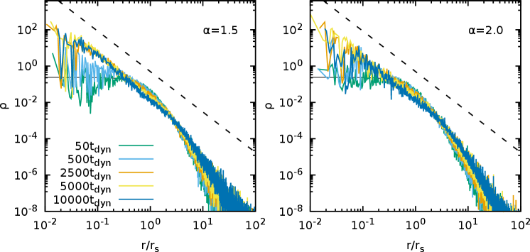
 وتوزيع كثافة ابتدائي من نوع Plummer (خط متصل رفيع) وطيفي كتل ذوي
وتوزيع كثافة ابتدائي من نوع Plummer (خط متصل رفيع) وطيفي كتل ذوي  (اللوحة اليسرى) و
(اللوحة اليسرى) و (اللوحة اليمنى). وكما في الشكل 10، يحدد الخط السميك المتقطع الملف النظري
(اللوحة اليمنى). وكما في الشكل 10، يحدد الخط السميك المتقطع الملف النظري  .
.4 تجارب عددية إضافية ونتائج
أجرينا طيفا واسعا من التجارب العددية لتحديد مجال قابلية تطبيق طريقة المحاكاة الجديدة التي قدمناها. أولا، درسنا عملية انهيار اللب في نماذج وحيدة المكون تبدأ بملفات كثافة Plummer متساوية الخواص ضمن مجال واسع من أحجام الأنظمة يمتد من إلى  . وفي هذه المجموعة من التجارب العددية نتتبع تطور أنصاف الأقطار ثلاثية الأبعاد والأنصاف اللاغرانجية المرتبطة بها التي تحتوي كسورا مختلفة من العدد الكلي للجسيمات (أو الكتلة) بين 2% و90%.
. وفي هذه المجموعة من التجارب العددية نتتبع تطور أنصاف الأقطار ثلاثية الأبعاد والأنصاف اللاغرانجية المرتبطة بها التي تحتوي كسورا مختلفة من العدد الكلي للجسيمات (أو الكتلة) بين 2% و90%.
انسجاما مع التوقعات، نجد من محاكاة MPC أنه عند القيم الكبيرة لـ  يصبح زمن انهيار اللب أكبر تقاربيا (بوحدات الزمن الديناميكي
يصبح زمن انهيار اللب أكبر تقاربيا (بوحدات الزمن الديناميكي  )، كما هو موضح في اللوحة اليسرى من الشكل 9 لحالة الكتل المتساوية مع
)، كما هو موضح في اللوحة اليسرى من الشكل 9 لحالة الكتل المتساوية مع  يتراوح من
يتراوح من  إلى
إلى  . ومن اللافت أنه عند القيم المنخفضة لـ
. ومن اللافت أنه عند القيم المنخفضة لـ  يبدو أن هناك اتجاها غير رتيب إلى حد ما لـ
يبدو أن هناك اتجاها غير رتيب إلى حد ما لـ  مع
مع  .
وأجرينا محاكاة MPC إضافية مع
.
وأجرينا محاكاة MPC إضافية مع  صغير يصل إلى
صغير يصل إلى  باستخدام تحقيقات مختلفة للشرط الابتدائي وباختيارات مختلفة للخطوة الزمنية وحجم الشبكة، ويستمر هذا الاتجاه.
باستخدام تحقيقات مختلفة للشرط الابتدائي وباختيارات مختلفة للخطوة الزمنية وحجم الشبكة، ويستمر هذا الاتجاه.
عند التعبير عن  بوحدات زمن الاسترخاء التصادمي
بوحدات زمن الاسترخاء التصادمي  (قارن المعادلة 14)، تنعكس الصورة، وتبلغ الأنظمة ذات
(قارن المعادلة 14)، تنعكس الصورة، وتبلغ الأنظمة ذات  الكبير انهيار اللب أبكر بوحدات
الكبير انهيار اللب أبكر بوحدات  الذاتية لها، انظر اللوحة اليمنى من الشكل نفسه. فمع ازدياد
الذاتية لها، انظر اللوحة اليمنى من الشكل نفسه. فمع ازدياد  إلى قيم أكبر فأكبر، تبدأ الأنظمة بالاقتراب من الحد المسمى عديم التصادم، حيث تصبح آثار التصادمات أقل أهمية فأقل، ولذلك تُقاد عملية انهيار اللب أساسا بلااستقرارات جماعية تحدث على مقاييس زمنية متزايدة الكبر. ومن ناحية أخرى، مع ازدياد
إلى قيم أكبر فأكبر، تبدأ الأنظمة بالاقتراب من الحد المسمى عديم التصادم، حيث تصبح آثار التصادمات أقل أهمية فأقل، ولذلك تُقاد عملية انهيار اللب أساسا بلااستقرارات جماعية تحدث على مقاييس زمنية متزايدة الكبر. ومن ناحية أخرى، مع ازدياد  يزداد
يزداد  أيضا مثل ، مما يؤدي إلى اتجاه متناقص لـ مع
أيضا مثل ، مما يؤدي إلى اتجاه متناقص لـ مع  .
.
نعرض في الشكل 10 لحالة  ملف الكثافة الشعاعي عند أزمنة مختلفة بين و. ومن الواضح أنه قرب بالفعل (الموافق تقريبا لـ لهذه القيمة من
ملف الكثافة الشعاعي عند أزمنة مختلفة بين و. ومن الواضح أنه قرب بالفعل (الموافق تقريبا لـ لهذه القيمة من  ) تكون الكثافة قد ابتعدت كثيرا عن ملف Plummer الابتدائي (المشار إليه في الشكل بالخط الأسود الرفيع). ومن اللافت أنه في أزمنة لاحقة يقترب الجزء الداخلي من ميل الكثافة من الاتجاه
) تكون الكثافة قد ابتعدت كثيرا عن ملف Plummer الابتدائي (المشار إليه في الشكل بالخط الأسود الرفيع). ومن اللافت أنه في أزمنة لاحقة يقترب الجزء الداخلي من ميل الكثافة من الاتجاه  (خط متقطع سميك) كما تنبأ به Cohn (1980) (انظر أيضا Heggie and Stevenson 1988)، وباتفاق جيد مع محاكاة Monte-Carlo التي أجراها Joshi et al. (2000) وPattabiraman et al. (2013). ولأزمنة أكبر من نحو يصبح إعادة تمدد المناطق الخارجية واضحا، كما يمكن رؤيته أيضا من تطور أنصاف الأقطار اللاغرانجية في الشكل 11. ومن المدهش أنه، على الرغم من عدم وجود معالجة صريحة للثنائيات في التنفيذ الحالي لـ mpcdss، فإن تطور ملف الكثافة نحو انهيار اللب وما بعده يطابق على نحو لافت نظيره المحصل بطرائق عددية مختلفة تتضمن معالجة منهجية للثنائيات. وبوجه خاص، فإن استعادة ميل الكثافة الحرج في محاكاة MPC (حتى لأنظمة صغيرة مثل وكبيرة مثل ، غير معروضة هنا) يشير إلى أنه ليس مرتبطا بقوة بـ ”أثر منظم الحرارة” لتشكل الثنائيات، بل بتبخر الجسيمات من اللب المتقلص.
(خط متقطع سميك) كما تنبأ به Cohn (1980) (انظر أيضا Heggie and Stevenson 1988)، وباتفاق جيد مع محاكاة Monte-Carlo التي أجراها Joshi et al. (2000) وPattabiraman et al. (2013). ولأزمنة أكبر من نحو يصبح إعادة تمدد المناطق الخارجية واضحا، كما يمكن رؤيته أيضا من تطور أنصاف الأقطار اللاغرانجية في الشكل 11. ومن المدهش أنه، على الرغم من عدم وجود معالجة صريحة للثنائيات في التنفيذ الحالي لـ mpcdss، فإن تطور ملف الكثافة نحو انهيار اللب وما بعده يطابق على نحو لافت نظيره المحصل بطرائق عددية مختلفة تتضمن معالجة منهجية للثنائيات. وبوجه خاص، فإن استعادة ميل الكثافة الحرج في محاكاة MPC (حتى لأنظمة صغيرة مثل وكبيرة مثل ، غير معروضة هنا) يشير إلى أنه ليس مرتبطا بقوة بـ ”أثر منظم الحرارة” لتشكل الثنائيات، بل بتبخر الجسيمات من اللب المتقلص.
نجد زمن انهيار اللب  (أي الزمن الذي يبلغ فيه الجزء المركزي من العنقود أعلى تركيز، ونقيسه هنا بوصفه الحد الأدنى الذي يبلغه نصف القطر اللاغرانجي المحتوي على
(أي الزمن الذي يبلغ فيه الجزء المركزي من العنقود أعلى تركيز، ونقيسه هنا بوصفه الحد الأدنى الذي يبلغه نصف القطر اللاغرانجي المحتوي على  من جسيمات المحاكاة) بنحو (مبين بالخط العمودي في الشكل 11)، باتفاق جيد إلى حد بعيد مع محاكاة Monte-Carlo التي أجراها Joshi et al. (2000); Hurley and Shara (2012) ومحاكاة
من جسيمات المحاكاة) بنحو (مبين بالخط العمودي في الشكل 11)، باتفاق جيد إلى حد بعيد مع محاكاة Monte-Carlo التي أجراها Joshi et al. (2000); Hurley and Shara (2012) ومحاكاة  -جسم التي أجراها Küpper et al. (2008)، إذ وجدت قيما بين و لنماذج ذات شروط ابتدائية مماثلة لتلك المستخدمة في محاكاتنا (أي ملف Plummer، و
-جسم التي أجراها Küpper et al. (2008)، إذ وجدت قيما بين و لنماذج ذات شروط ابتدائية مماثلة لتلك المستخدمة في محاكاتنا (أي ملف Plummer، و ، ومن دون طيف كتل).
، ومن دون طيف كتل).
علاوة على ذلك، أجرينا أيضا محاكاة إضافية لنماذج Plummer بقيم مختلفة من  وبأطياف كتل، ووجدنا، على نحو مفاجئ، أنه في النماذج ذات
وبأطياف كتل، ووجدنا، على نحو مفاجئ، أنه في النماذج ذات  ضمن المجال بين 1.5 و3 يكون الميل التقاربي لملف الكثافة في المناطق الداخلية أفضل مطابقة للاتجاه المتوقع
ضمن المجال بين 1.5 و3 يكون الميل التقاربي لملف الكثافة في المناطق الداخلية أفضل مطابقة للاتجاه المتوقع  ، كما هو مبين في الشكل 12 لحالتي و مع .
، كما هو مبين في الشكل 12 لحالتي و مع .
نلاحظ عموما أنه عند تثبيت عدد الجسيمات والكتلة الكلية  ، تبلغ النماذج ذات أطياف الكتل انهيار اللب أسرع، بوحدات
، تبلغ النماذج ذات أطياف الكتل انهيار اللب أسرع، بوحدات  ، من حالة الكتل المتساوية المرتبطة بها. ويمكن رؤية ذلك في الشكل 13 حيث نعرض أنصاف الأقطار اللاغرانجية التي تحصر الكسور نفسها من العدد الكلي للجسيمات كما في الشكل 11، ولكن لنموذجين ذوي طيف كتل بأسين
، من حالة الكتل المتساوية المرتبطة بها. ويمكن رؤية ذلك في الشكل 13 حيث نعرض أنصاف الأقطار اللاغرانجية التي تحصر الكسور نفسها من العدد الكلي للجسيمات كما في الشكل 11، ولكن لنموذجين ذوي طيف كتل بأسين  و2. وفي كلتا الحالتين يكون زمن انهيار اللب
و2. وفي كلتا الحالتين يكون زمن انهيار اللب  أدنى بكثير من
أدنى بكثير من  ، إذ يبلغ تقريبا عند
، إذ يبلغ تقريبا عند  و عند كما تحدده الخطوط العمودية في الشكل.
و عند كما تحدده الخطوط العمودية في الشكل.
وبما أن أنصاف الأقطار المعتمدة على الزمن التي تحصر كسرا معينا من الكتلة الكلية  أو من عدد الجسيمات
أو من عدد الجسيمات  ليست الكمية نفسها في نموذج يحوي أنواعا مختلفة، فقد قيّمنا كلا النوعين من ”أنصاف الأقطار اللاغرانجية” لبعض النماذج ذات طيف الكتل. وكما هو متوقع، ونظرا إلى أن النجوم الأكبر كتلة تميل إلى التراكم في مركز النظام بفعل الاحتكاك الديناميكي الأكثر كفاءة، فإن أنصاف الأقطار اللاغرانجية المحسوبة لنسبة مئوية معينة من كتلة النموذج تبلغ قيما أصغر منهجيا من تلك المقيمة بالنسبة المئوية نفسها من العدد الكلي للجسيمات. غير أن أزمنة انهيار اللب المقدرة لا تختلف اختلافا مهما بين الاختيارين، بغض النظر عن عدد الجسيمات في المحاكاة.
ليست الكمية نفسها في نموذج يحوي أنواعا مختلفة، فقد قيّمنا كلا النوعين من ”أنصاف الأقطار اللاغرانجية” لبعض النماذج ذات طيف الكتل. وكما هو متوقع، ونظرا إلى أن النجوم الأكبر كتلة تميل إلى التراكم في مركز النظام بفعل الاحتكاك الديناميكي الأكثر كفاءة، فإن أنصاف الأقطار اللاغرانجية المحسوبة لنسبة مئوية معينة من كتلة النموذج تبلغ قيما أصغر منهجيا من تلك المقيمة بالنسبة المئوية نفسها من العدد الكلي للجسيمات. غير أن أزمنة انهيار اللب المقدرة لا تختلف اختلافا مهما بين الاختيارين، بغض النظر عن عدد الجسيمات في المحاكاة.
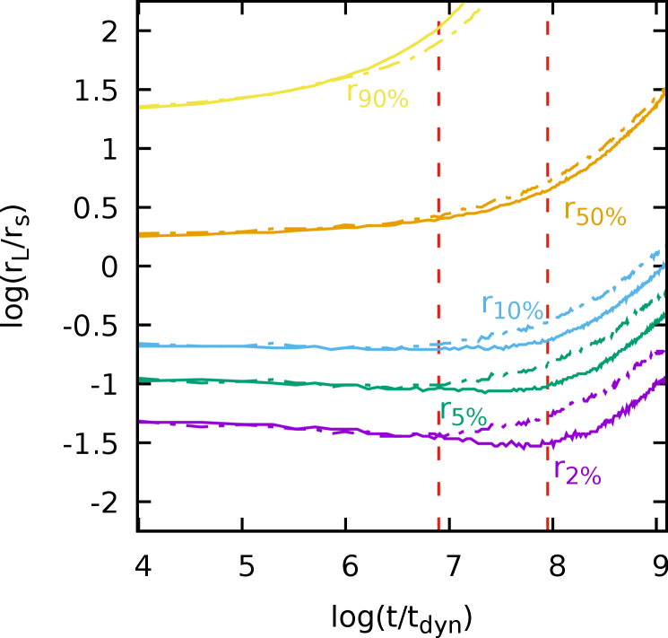
 و
و و
و و و
و و من العدد الكلي للجسيمات
من العدد الكلي للجسيمات  للنموذجين المعروضين في الشكل 12. وتشير الخطوط المتصلة والمتقطعة-المنقطة إلى حالتي
للنموذجين المعروضين في الشكل 12. وتشير الخطوط المتصلة والمتقطعة-المنقطة إلى حالتي  و2، على التوالي. ويحدد الخطان العموديان المتقطعان زمنا انهيار اللب للنموذجين عند
و2، على التوالي. ويحدد الخطان العموديان المتقطعان زمنا انهيار اللب للنموذجين عند  و عند
و عند  .
.5 مناقشة واستنتاجات وآفاق مستقبلية
قدمنا كودا جديدا لمحاكاة التطور التصادمي للأنظمة النجمية الكثيفة باستخدام مقاربة التصادم متعدد الجسيمات (MPC). ويمتاز كودنا بتدرج  في عدد النجوم، مما يجعله ملائما لمحاكاة GCs ضخمة وNSC في درب التبانة. وستبقى هذه الأنظمة، في المستقبل المنظور، خارج متناول أكواد
في عدد النجوم، مما يجعله ملائما لمحاكاة GCs ضخمة وNSC في درب التبانة. وستبقى هذه الأنظمة، في المستقبل المنظور، خارج متناول أكواد  -جسم ذات الجمع المباشر، لأن الأخيرة تتدرج تربيعيا مع عدد النجوم.
وتقوم طريقة MPC على التناوب بين خطوات انتقال حر (تتطور فيها النجوم في كمون الجاذبية الأملس للنظام النجمي كله) وخطوات تصادم تهدف إلى نمذجة آثار الاسترخاء الناتجة عن اللقاءات النجمية. وخطوات التصادم هي دورانات، قائمة على الخلايا، لمتجهات السرعة النجمية تحفظ بالإنشاء الكتلة والزخم والطاقة55
5
في تنفيذنا للطريقة، يضمن أيضا حفظ الزخم الزاوي، لكن يمكن إيقاف هذه الميزة لتسريع الحسابات عند الضرورة.. وتجرّد مقاربة MPC من تعقيدات اللقاءات الثنائية ومتعددة الأجسام التي تتطلب في أكواد
-جسم ذات الجمع المباشر، لأن الأخيرة تتدرج تربيعيا مع عدد النجوم.
وتقوم طريقة MPC على التناوب بين خطوات انتقال حر (تتطور فيها النجوم في كمون الجاذبية الأملس للنظام النجمي كله) وخطوات تصادم تهدف إلى نمذجة آثار الاسترخاء الناتجة عن اللقاءات النجمية. وخطوات التصادم هي دورانات، قائمة على الخلايا، لمتجهات السرعة النجمية تحفظ بالإنشاء الكتلة والزخم والطاقة55
5
في تنفيذنا للطريقة، يضمن أيضا حفظ الزخم الزاوي، لكن يمكن إيقاف هذه الميزة لتسريع الحسابات عند الضرورة.. وتجرّد مقاربة MPC من تعقيدات اللقاءات الثنائية ومتعددة الأجسام التي تتطلب في أكواد  -جسم المباشرة تقنيات مثل التليين أو انتظام Kustaanheimo-Stiefel (انظر مثلا Mikkola 2008) لمعالجة فردية كمون الجاذبية
-جسم المباشرة تقنيات مثل التليين أو انتظام Kustaanheimo-Stiefel (انظر مثلا Mikkola 2008) لمعالجة فردية كمون الجاذبية  66
6
لاحظ أن تليين تآثر الجاذبية تكيفيا مع أو إجراء تحويل Kustaanheimo-Stiefel للموضع
66
6
لاحظ أن تليين تآثر الجاذبية تكيفيا مع أو إجراء تحويل Kustaanheimo-Stiefel للموضع  والزمن إلى و كلما حدث لقاء قريب ثنائي الجسم، يضيف زيادة أخرى في الزمن الحاسوبي في المحاكاة المباشرة.، مع الاحتفاظ بآثار الاسترخاء الناتجة عن اللقاءات. وبالاستغناء عن الحاجة إلى حساب جميع القوى الزوجية، تؤدي مقاربة MPC إلى تعقيد خوارزمي أقل بكثير مع عدد النجوم، من دون فقدان القدرة على استعادة التطور طويل الأمد للأنظمة النجمية على نحو صحيح.
والزمن إلى و كلما حدث لقاء قريب ثنائي الجسم، يضيف زيادة أخرى في الزمن الحاسوبي في المحاكاة المباشرة.، مع الاحتفاظ بآثار الاسترخاء الناتجة عن اللقاءات. وبالاستغناء عن الحاجة إلى حساب جميع القوى الزوجية، تؤدي مقاربة MPC إلى تعقيد خوارزمي أقل بكثير مع عدد النجوم، من دون فقدان القدرة على استعادة التطور طويل الأمد للأنظمة النجمية على نحو صحيح.
مقارنة بمقاربات Monte-Carlo، يمتاز كودنا بسهولة محاكاة أي هندسة، إذ لا تعتمد طريقة MPC اعتمادا محسوسا على شكل الخلايا المنفردة أو بنية الشبكة العامة، في حين تقتصر معظم أكواد Monte-Carlo على تشكيلات عالية التناظر. لذلك يمكننا محاكاة عناقيد نجمية دوارة77
7
لاحظ أنه بما أن مؤثر MPC يعمل في إطار مركز الكتلة لكل خلية، فإن وجود مجال دوران جماعي لا يؤثر بأي صورة في آلية التصادم العشوائية. أو مندمجة أو متفككة مديا من دون جهد إضافي ومن دون فقدان في الدقة مقارنة بالأنظمة ذات التناظر الكروي.
في هذه الورقة قدمنا كود MPC وأجرينا بضعة اختبارات محاكاة، مبيّنين أن الطاقة الكلية والزخم الزاوي لمحاكاة معزولة محفوظان. كما حسبنا نسبة الفيريال (الطاقة الحركية على الطاقة الكامنة)، وهي محفوظة أيضا بدقة لافتة.
وأخيرا، تحققنا من صلاحية كودنا بمقارنته بمحاكاة  -جسم المباشرة للعناقيد النجمية. ونجد أن تطور الكثافة المركزية وتشتت السرعات المركزي وعدد الجسيمات الهاربة بوصفها دوالا في الزمن في محاكاة MPC يتبع عن كثب نظيره في محاكاة
-جسم المباشرة للعناقيد النجمية. ونجد أن تطور الكثافة المركزية وتشتت السرعات المركزي وعدد الجسيمات الهاربة بوصفها دوالا في الزمن في محاكاة MPC يتبع عن كثب نظيره في محاكاة  -جسم المباشرة عبر مجال واسع من أطياف الكتل النجمية. وإضافة إلى ذلك، فإن الزمن الذي يبلغ فيه انهيار اللب اتفاق جيد أيضا مع كل من حسابات
-جسم المباشرة عبر مجال واسع من أطياف الكتل النجمية. وإضافة إلى ذلك، فإن الزمن الذي يبلغ فيه انهيار اللب اتفاق جيد أيضا مع كل من حسابات  -جسم المباشرة والحسابات التحليلية النظرية.
-جسم المباشرة والحسابات التحليلية النظرية.
نخطط مستقبلا إلى إضافة واجهة مع وحدة تطور نجمي مجتمعية مثل Single Stellar Evolution (SSE; Hurley et al., 2000) أو SEVN الأحدث (Spera and Mapelli, 2017)، وإلى إدخال مخطط واحد أو أكثر لمحاكاة النجوم الثنائية، مثل جسيمات متتبعة ذات ديناميكيات داخلية على غرار أكواد البلازما التي تتضمن التأين وإعادة الاتحاد (انظر مثلا Di Cintio et al. 2013)، أو مكامل مباشر متداخل لمجموعة فرعية من الجسيمات (مثلا Fregeau, 2012) مقترن بكود تطور ثنائي (Hurley et al., 2002; Giacobbo et al., 2018) من أجل دراسة ديناميكيات الأجسام المدمجة (مثلا Mapelli, 2016; Rastello et al., 2020) وظواهر أخرى تعتمد اعتمادا حاسما على نمذجة الثنائيات، مثل المتسكعات الزرقاء (Miocchi et al., 2015; Pasquato et al., 2018; Pasquato and Di Cintio, 2020). ثم سنجري مجموعة كبيرة من المحاكاة نخطط لإتاحتها علنا مع النسخة الموازية بالكامل من الكود، بما في ذلك محاكاة مخصصة لنمذجة أجسام معينة، مثل Omega Centauri وM  . وأخيرا، سنتناول مسألة احتفاظ العناقيد النجمية بالثقوب السوداء، مع التركيز خصوصا على مصير الثقوب السوداء متوسطة الكتلة في العنقود النووي المجري.
. وأخيرا، سنتناول مسألة احتفاظ العناقيد النجمية بالثقوب السوداء، مع التركيز خصوصا على مصير الثقوب السوداء متوسطة الكتلة في العنقود النووي المجري.
Acknowledgements.
تلقى هذا المشروع تمويلا من برنامج Horizon للبحث والابتكار التابع للاتحاد الأوروبي، بموجب اتفاقية منحة Marie Skłodowska-Curie رقم . تستند هذه المادة إلى عمل مدعوم من Tamkeen بموجب منحة معهد الأبحاث في جامعة نيويورك أبوظبي CAP3.
يرغب P.F.D.C. في شكر التمويل المقدم من مشروع MIUR-PRIN2017 وصف خشن الحبيبات للأنظمة غير المتوازنة وظواهر النقل
(CO-NEST) رقم 201798CZL. ويقر S.-J.Y. بالدعم المقدم من برنامج الباحثين في منتصف المسار المهني (رقم 2019R1A2C3006242) وبرنامج SRC (مركز أبحاث تطور المجرات؛ رقم 2017R1A5A1070354) عبر مؤسسة الأبحاث الوطنية الكورية. نشكر A.A. Trani وL. Ciotti وG. Ciraolo على المناقشات في مرحلة مبكرة من هذا المشروع، ونشكر المحكم المجهول على تعليقاته التي ساعدت في تحسين عرض هذا العمل.
. تستند هذه المادة إلى عمل مدعوم من Tamkeen بموجب منحة معهد الأبحاث في جامعة نيويورك أبوظبي CAP3.
يرغب P.F.D.C. في شكر التمويل المقدم من مشروع MIUR-PRIN2017 وصف خشن الحبيبات للأنظمة غير المتوازنة وظواهر النقل
(CO-NEST) رقم 201798CZL. ويقر S.-J.Y. بالدعم المقدم من برنامج الباحثين في منتصف المسار المهني (رقم 2019R1A2C3006242) وبرنامج SRC (مركز أبحاث تطور المجرات؛ رقم 2017R1A5A1070354) عبر مؤسسة الأبحاث الوطنية الكورية. نشكر A.A. Trani وL. Ciotti وG. Ciraolo على المناقشات في مرحلة مبكرة من هذا المشروع، ونشكر المحكم المجهول على تعليقاته التي ساعدت في تحسين عرض هذا العمل.
References
- Gravitational N-Body Simulations. External Links: ADS entry Cited by: §1, §1.
- Nuclear Star Clusters from Clustered Star Formation. ApJ 729 (1), pp. 35. External Links: Document, 1008.2986, ADS entry Cited by: footnote 2.
- A Deep View into the Nucleus of the Sagittarius Dwarf Spheroidal Galaxy with MUSE. II. Kinematic Characterization of the Stellar Populations. ApJ 892 (1), pp. 20. External Links: Document, 2002.07814, ADS entry Cited by: §1.
- A deep view into the nucleus of the Sagittarius dwarf spheroidal galaxy: M54. In Star Clusters: From the Milky Way to the Early Universe, A. Bragaglia, M. Davies, A. Sills, and E. Vesperini (Eds.), Vol. 351, pp. 47–50. External Links: Document, ADS entry Cited by: §1.
- Mergers of multimetallic globular clusters: the role of dynamics. MNRAS 435 (1), pp. 809–821. External Links: Document, 1108.5173, ADS entry Cited by: §1.
- Dissipationless Formation and Evolution of the Milky Way Nuclear Star Cluster. ApJ 750 (2), pp. 111. External Links: Document, 1110.5937, ADS entry Cited by: §1, footnote 2.
- Population synthesis of black hole binary mergers from star clusters. MNRAS, pp. 31. External Links: Document, 1906.11855, ADS entry Cited by: §1.
- MOCCA-Survey Database - I. Unravelling black hole subsystems in globular clusters. MNRAS 479 (4), pp. 4652–4664. External Links: Document, 1801.00795, ADS entry Cited by: §1.
- The globular cluster migratory origin of nuclear star clusters. MNRAS 444 (4), pp. 3738–3755. External Links: Document, 1405.7593, ADS entry Cited by: §1, footnote 2.
- Formation of super-massive black holes in galactic nuclei I: delivering seed intermediate-mass black holes in massive stellar clusters. arXiv e-prints, pp. arXiv:2006.04922. External Links: 2006.04922, ADS entry Cited by: §1.
- MOCCA-SURVEY Database - I. Coalescing binary black holes originating from globular clusters. MNRAS 464 (1), pp. L36–L40. External Links: Document, 1608.02520, ADS entry Cited by: §1.
- Compact binaries ejected from globular clusters as gravitational wave sources. MNRAS 440 (3), pp. 2714–2725. External Links: Document, 1308.1641, ADS entry Cited by: §1.
- Blue Stragglers and Other Stellar Anomalies:Implications for the Dynamics of Globular Clusters. ARA&A 33, pp. 133–162. External Links: Document, ADS entry Cited by: §1.
- Stellar-mass black holes in star clusters: implications for gravitational wave radiation. MNRAS 402 (1), pp. 371–380. External Links: Document, 0910.3954, ADS entry Cited by: §1.
- A Comprehensive Study of Binary Compact Objects as Gravitational Wave Sources: Evolutionary Channels, Rates, and Physical Properties. ApJ 572 (1), pp. 407–431. External Links: Document, astro-ph/0111452, ADS entry Cited by: §1.
- Co-formation of the disc and the stellar halo. MNRAS 478 (1), pp. 611–619. External Links: Document, 1802.03414, ADS entry Cited by: §1.
- Constraining the Fraction of Binary Black Holes Formed in Isolation and Young Star Clusters with Gravitational-wave Data. ApJ 886 (1), pp. 25. External Links: Document, 1905.11054, ADS entry Cited by: §1.
- Newton vs the machine: solving the chaotic three-body problem using deep neural networks. arXiv e-prints, pp. arXiv:1910.07291. External Links: 1910.07291, ADS entry Cited by: footnote 1.
- Distinguishing between Formation Channels for Binary Black Holes with LISA. ApJ 830 (1), pp. L18. External Links: Document, 1606.09558, ADS entry Cited by: §1.
- Self-consistent simulations of nuclear cluster formation through globular cluster orbital decay and merging. MNRAS 388 (1), pp. L69–L73. External Links: Document, 0804.4421, ADS entry Cited by: §1.
- The Evolution of the Globular Cluster System in a Triaxial Galaxy: Can a Galactic Nucleus Form by Globular Cluster Capture?. ApJ 415, pp. 616. External Links: Document, astro-ph/9301006, ADS entry Cited by: §1.
- Brownian Motion in Gravitationally Interacting Systems. Phys. Rev. Lett. 88 (12), pp. 121103. External Links: Document, astro-ph/0202257, ADS entry Cited by: §3.1.
- Dynamics of a Massive Black Hole at the Center of a Dense Stellar System. The Astrophysical Journal 572 (1), pp. 371–381. External Links: Document, astro-ph/0107287, ADS entry Cited by: §3.1.
- Effects of Wandering on the Coalescence of Black Hole Binaries in Galactic Centers. ApJ 592 (1), pp. 32–41. External Links: Document, astro-ph/0302573, ADS entry Cited by: §3.1.
- Dynamical Formation of Low-mass Merging Black Hole Binaries like GW151226. ApJ 836 (2), pp. L26. External Links: Document, 1609.06689, ADS entry Cited by: §1.
- Radial Dependence of the Proto-globular Cluster Contribution to the Milky Way Formation. ApJ 883 (2), pp. L31. External Links: Document, 1909.01353, ADS entry Cited by: §1.
- Phase mixing in MOND. In Collective Phenomena in Macroscopic Systems, pp. 177–186. External Links: Document, astro-ph/0701826, ADS entry Cited by: §2.2.
- Dynamical Friction from field particles with a mass spectrum. In American Institute of Physics Conference Series, G. Bertin, F. de Luca, G. Lodato, R. Pozzoli, and M. Romé (Eds.), American Institute of Physics Conference Series, Vol. 1242, pp. 117–128. External Links: 1001.3531, Document, ADS entry Cited by: §3.2.
- Fluid and kinetic modelling for non-local heat transport in magnetic fusion devices. Contributions to Plasma Physics 58 (6-8), pp. 457–464. External Links: Document, 1801.01177, ADS entry Cited by: §2.1.
- Late core collapse in star clusters and the gravothermal instability. ApJ 242, pp. 765–771. External Links: Document, ADS entry Cited by: §4.
- Spatial and kinematic segregation in star-cluster merger remnants. MNRAS 466 (3), pp. 2895–2909. External Links: Document, 1605.02881, ADS entry Cited by: §1.
- Merging black holes in young star clusters. MNRAS 487 (2), pp. 2947–2960. External Links: Document, 1901.00863, ADS entry Cited by: §1.
- Non-thermal states in models of filaments: a dynamical study.. Mem. Soc. Astron. Italiana 88, pp. 733. External Links: 1712.08224, ADS entry Cited by: §2.1.
- Anomalous dynamical scaling in anharmonic chains and plasma models with multiparticle collisions. Phys. Rev. E 92 (6), pp. 062108. External Links: 1509.08796, Document, ADS entry Cited by: §2.1.
- Multiparticle collision simulations of two-dimensional one-component plasmas: Anomalous transport and dimensional crossovers. Phys. Rev. E 95 (4), pp. 043203. External Links: 1610.10047, Document, ADS entry Cited by: §2.1.
- N-body chaos and the continuum limit in numerical simulations of self-gravitating systems, revisited. MNRAS 489 (4), pp. 5876–5888. External Links: Document, 1901.08981, ADS entry Cited by: §3.1, footnote 1.
- Discreteness effects, N-body chaos and the onset of radial-orbit instability. MNRAS 494 (1), pp. 1027–1034. External Links: Document, 1912.07406, ADS entry Cited by: footnote 1.
- Brownian motion of supermassive black holes in galaxy cores. In Star Clusters: From the Milky Way to the Early Universe, A. Bragaglia, M. Davies, A. Sills, and E. Vesperini (Eds.), Vol. 351, pp. 93–96. External Links: Document, 1908.04283, ADS entry Cited by: §3.1.
- Dynamical origin of non-thermal states in galactic filaments. MNRAS 475 (1), pp. 1137–1147. External Links: Document, 1706.01955, ADS entry Cited by: §2.1.
- Proton Ejection from Molecular Hydride Clusters Exposed to Strong x-Ray Pulses. Phys. Rev. Lett. 111 (12), pp. 123401. External Links: Document, 1307.4241, ADS entry Cited by: §5.
- The Milky Way has no in-situ halo other than the heated thick disc. Composition of the stellar halo and age-dating the last significant merger with Gaia DR2 and APOGEE. A&A 632, pp. A4. External Links: Document, 1812.08232, ADS entry Cited by: §1.
- Missing Link Found? The “Runaway” Path to Supermassive Black Holes. ApJ 562 (1), pp. L19–L22. External Links: Document, astro-ph/0106252, ADS entry Cited by: §1.
- Tidal capture formation of binary systems and X-ray sources in globular clusters.. MNRAS 172, pp. 15. External Links: Document, ADS entry Cited by: §1.
- Stellar collisions during binary-binary and binary-single star interactions. MNRAS 352 (1), pp. 1–19. External Links: Document, astro-ph/0401004, ADS entry Cited by: §1.
- Fewbody: Numerical toolkit for simulating small-N gravitational dynamics. External Links: 1208.011, ADS entry Cited by: §5.
- A new Monte Carlo code for star cluster simulations. I. Relaxation. A&A 375, pp. 711–738. External Links: Document, astro-ph/0102139, ADS entry Cited by: §1.
- A new Monte Carlo code for star cluster simulations. II. Central black hole and stellar collisions. A&A 394, pp. 345–374. External Links: Document, astro-ph/0204292, ADS entry Cited by: §1.
- The time-scale of escape from star clusters. MNRAS 318 (3), pp. 753–761. External Links: Document, astro-ph/9910468, ADS entry Cited by: §3.2.
- Merging black hole binaries: the effects of progenitor’s metallicity, mass-loss rate and Eddington factor. MNRAS 474 (3), pp. 2959–2974. External Links: Document, 1711.03556, ADS entry Cited by: §5.
- MOCCA code for star cluster simulations - II. Comparison with N-body simulations. MNRAS 431 (3), pp. 2184–2199. External Links: Document, 1112.6246, ADS entry Cited by: §1.
- Monte Carlo simulations of star clusters - II. Tidally limited, multimass systems with stellar evolution. MNRAS 324 (1), pp. 218–230. External Links: Document, astro-ph/0009341, ADS entry Cited by: §1.
- Monte Carlo simulations of star clusters - III. A million-body star cluster. MNRAS 371 (1), pp. 484–494. External Links: Document, astro-ph/0512606, ADS entry Cited by: §1.
- Multi-Particle Collision Dynamics: A Particle-Based Mesoscale Simulation Approach to the Hydrodynamics of Complex Fluids. In Advanced Computer Simulation Approaches for Soft Matter Sciences III, C. Holm and K. Kremer (Eds.), pp. 1. External Links: Document, ADS entry Cited by: §2.1.
- The dual origin of the Galactic thick disc and halo from the gas-rich Gaia-Enceladus Sausage merger. MNRAS 497 (2), pp. 1603–1618. External Links: Document, 2001.06009, ADS entry Cited by: §1.
- Two homological models for the evolution of star clusters. MNRAS 230, pp. 223–241. External Links: Document, ADS entry Cited by: §4.
- Internal dynamics of globular clusters .. Mem. Soc. Astron. Italiana 87, pp. 579. External Links: ADS entry Cited by: §1.
- The Monte Carlo Method (Papers appear in the Proceedings of IAU Colloquium No. 10 Gravitational N-Body Problem (ed. by Myron Lecar), R. Reidel Publ. Co. , Dordrecht-Holland.). Ap&SS 14 (1), pp. 151–167. External Links: Document, ADS entry Cited by: §1.
- Monte Carlo Models of Star Clusters (Part of the Proceedings of the IAU Colloquium No. 10, held in Cambridge, England, August 12-15, 1970.). Ap&SS 13 (2), pp. 284–299. External Links: Document, ADS entry Cited by: §1.
- Two Recent Developments Concerning the Monte Carlo Method. In Dynamics of the Solar Systems, A. Hayli (Ed.), IAU Symposium, Vol. 69, pp. 133. External Links: ADS entry Cited by: §1.
- Computer simulation using particles. External Links: ADS entry Cited by: §2.2.
- Comprehensive analytic formulae for stellar evolution as a function of mass and metallicity. MNRAS 315 (3), pp. 543–569. External Links: Document, astro-ph/0001295, ADS entry Cited by: §5.
- A direct N-body model of core-collapse and core oscillations. MNRAS 425 (4), pp. 2872–2879. External Links: Document, 1208.4880, ADS entry Cited by: §4.
- A Dynamical Gravitational Wave Source in a Dense Cluster. PASA 33, pp. e036. External Links: Document, 1607.00641, ADS entry Cited by: §1.
- Evolution of binary stars and the effect of tides on binary populations. MNRAS 329 (4), pp. 897–928. External Links: Document, astro-ph/0201220, ADS entry Cited by: §5.
- MOCCA code for star cluster simulations - I. Blue stragglers, first results. MNRAS 429 (2), pp. 1221–1243. External Links: Document, 1207.6700, ADS entry Cited by: §1.
-
Identification of the long stellar stream of the prototypical massive globular cluster Centauri.
Nature Astronomy 3, pp. 667–672.
External Links: Document,
1902.09544,
ADS entry
Cited by: §1.
- Monte Carlo Simulations of Globular Cluster Evolution. I. Method and Test Calculations. ApJ 540 (2), pp. 969–982. External Links: Document, astro-ph/9909115, ADS entry Cited by: §1, §4.
- LISA Sources in Milky Way Globular Clusters. Phys. Rev. Lett. 120 (19), pp. 191103. External Links: Document, 1802.05661, ADS entry Cited by: §1.
- The Initial Mass Function of Stars: Evidence for Uniformity in Variable Systems. Science 295 (5552), pp. 82–91. External Links: Document, astro-ph/0201098, ADS entry Cited by: §3.2.
- The main sequence of star clusters. MNRAS 389 (2), pp. 889–902. External Links: Document, 0806.3973, ADS entry Cited by: §4.
-
Multiple stellar populations in the globular cluster Centauri as tracers of a merger event.
Nature 402 (6757), pp. 55–57.
External Links: Document,
astro-ph/9911137,
ADS entry
Cited by: §1.
- Where the Blue Stragglers Roam: Searching for a Link between Formation and Environment. ApJ 661 (1), pp. 210–221. External Links: Document, astro-ph/0702349, ADS entry Cited by: §1.
- Collisional relaxation and dynamical scaling in multiparticle collisions dynamics. In Stochastic Dynamics Out of Equilibrium, G. Giacomin, S. Olla, E. Saada, H. Spohn, and G. Stoltz (Eds.), Cham, pp. 364–374. External Links: ISBN 978-3-030-15096-9 Cited by: §2.1.
- Performance Analysis of Direct N-Body Calculations. ApJS 68, pp. 833. External Links: Document, ADS entry Cited by: §1.
- Mesoscopic model for solvent dynamics. J. Chem. Phys. 110, pp. 8605–8613. External Links: Document, ADS entry Cited by: §2.1.
- Mesoscopic Multi-particle Collision Model for Fluid Flow and Molecular Dynamics. In Novel Methods in Soft Matter Simulations, M. Karttunen, A. Lukkarinen, and I. Vattulainen (Eds.), Lecture Notes in Physics, Berlin Springer Verlag, Vol. 640, pp. 116–149. External Links: Document, ADS entry Cited by: §2.1.
- Massive black hole binaries from runaway collisions: the impact of metallicity. MNRAS 459 (4), pp. 3432–3446. External Links: Document, 1604.03559, ADS entry Cited by: §5.
- Origin of the system of globular clusters in the Milky Way. A&A 630, pp. L4. External Links: Document, 1906.08271, ADS entry Cited by: §1.
- Effects of Intermediate Mass Black Holes on Nuclear Star Clusters. ApJ 796 (1), pp. 40. External Links: Document, 1403.3094, ADS entry Cited by: §1.
- The accuracy of symplectic integrators. Nonlinearity 5 (2), pp. 541. Cited by: §2.2.
- Resolved Massive Star Clusters in the Milky Way and Its Satellites: Brightness Profiles and a Catalog of Fundamental Parameters. ApJS 161 (2), pp. 304–360. External Links: Document, astro-ph/0605132, ADS entry Cited by: Figure 1.
- Regular Algorithms for the Few-Body Problem. In The Cambridge N-Body Lectures, S. J. Aarseth, C. A. Tout, and R. A. Mardling (Eds.), Vol. 760, pp. 31. External Links: Document, ADS entry Cited by: §5.
- Probing the Role of Dynamical Friction in Shaping the BSS Radial Distribution. I. Semi-analytical Models and Preliminary N-body Simulations. ApJ 799 (1), pp. 44. External Links: Document, 1411.2161, ADS entry Cited by: §5.
- Families of dynamically hot stellar systems over 10 orders of magnitude in mass. MNRAS 414 (4), pp. 3699–3710. External Links: Document, 1103.1628, ADS entry Cited by: footnote 2.
- Discovery of new retrograde substructures: the shards of Centauri?. MNRAS 478 (4), pp. 5449–5459. External Links: Document, ADS entry Cited by: §1.
- Evidence for two early accretion events that built the Milky Way stellar halo. MNRAS 488 (1), pp. 1235–1247. External Links: Document, 1904.03185, ADS entry Cited by: §1.
- Nuclear Star Clusters. In Formation, Evolution, and Survival of Massive Star Clusters, C. Charbonnel and A. Nota (Eds.), IAU Symposium, Vol. 316, pp. 84–90. External Links: Document, ADS entry Cited by: footnote 2.
- Accelerating NBODY6 with graphics processing units. MNRAS 424, pp. 545–552. External Links: 1205.1222, Document, ADS entry Cited by: §1.
- Merged or monolithic? Using machine-learning to reconstruct the dynamical history of simulated star clusters. A&A 589, pp. A95. External Links: Document, 1602.00993, ADS entry Cited by: §1.
- Stellar Encounter Driven Red-giant Star Mass Loss in Globular Clusters. ApJ 789 (1), pp. 28. External Links: Document, 1406.1183, ADS entry Cited by: §1.
- Taking apart the dynamical clock. Fat-tailed dynamical kicks shape the blue straggler star bimodality. A&A 640, pp. A79. External Links: Document, 2005.01843, ADS entry Cited by: §5.
- Blue Straggler Bimodality: A Brownian Motion Model. ApJ 867 (2), pp. 163. External Links: Document, 1810.11023, ADS entry Cited by: §5.
- A Parallel Monte Carlo Code for Simulating Collisional N-body Systems. ApJS 204 (2), pp. 15. External Links: Document, 1206.5878, ADS entry Cited by: §1, §2.2, §4.
- Age and Mass Segregation of Multiple Stellar Populations in Galactic Nuclei and their Observational Signatures. ApJ 784 (2), pp. L44. External Links: Document, 1401.1824, ADS entry Cited by: footnote 2.
- The initial conditions of observed star clusters - I. Method description and validation. MNRAS 453 (1), pp. 605–637. External Links: Document, 1507.04372, ADS entry Cited by: §1.
- On the problem of distribution in globular star clusters. MNRAS 71, pp. 460–470. External Links: Document, ADS entry Cited by: §3.1.
- Formation of massive black holes through runaway collisions in dense young star clusters. Nature 428 (6984), pp. 724–726. External Links: Document, astro-ph/0402622, ADS entry Cited by: §1.
- The Ecology of Star Clusters and Intermediate-Mass Black Holes in the Galactic Bulge. ApJ 641 (1), pp. 319–326. External Links: Document, astro-ph/0511397, ADS entry Cited by: §1.
- Young Massive Star Clusters. ARA&A 48, pp. 431–493. External Links: Document, 1002.1961, ADS entry Cited by: §1.
- Star cluster ecology - IV. Dissection of an open star cluster: photometry. MNRAS 321 (2), pp. 199–226. External Links: Document, astro-ph/0005248, ADS entry Cited by: §1.
- Stellar black hole binary mergers in open clusters. MNRAS 483 (1), pp. 1233–1246. External Links: Document, 1811.10628, ADS entry Cited by: §1.
- Dynamics of black hole - neutron star binaries in young star clusters. arXiv e-prints, pp. arXiv:2003.02277. External Links: 2003.02277, ADS entry Cited by: §5.
- Binary black hole mergers from globular clusters: Masses, merger rates, and the impact of stellar evolution. Phys. Rev. D 93 (8), pp. 084029. External Links: Document, 1602.02444, ADS entry Cited by: §1.
- A new hybrid technique for modeling dense star clusters. Computational Astrophysics and Cosmology 5 (1), pp. 5. External Links: Document, 1511.00695, ADS entry Cited by: §1, §2.2.
- Mesoscopic Simulations of Complex Fluids. Ph.D. Thesis, Oxford University, UK. Cited by: §2.1.
- N/A. ApJ 121, pp. 161. Cited by: §3.2.
- A Photometric Study of the Globular Cluster M54 and the Sagittarius Dwarf Galaxy: Evidence for Three Distinct Populations. AJ 109, pp. 1086. External Links: Document, ADS entry Cited by: §1.
- Investigating the blue straggler stars radial distribution in globular clusters with Monte Carlo simulations. MNRAS 483 (2), pp. 1523–1536. External Links: Document, 1811.11174, ADS entry Cited by: §1.
- Treatment of realistic tidal field in Monte Carlo simulations of star clusters. MNRAS 443 (4), pp. 3513–3527. External Links: Document, 1407.4169, ADS entry Cited by: §1.
- Very massive stars, pair-instability supernovae and intermediate-mass black holes with the sevn code. MNRAS 470 (4), pp. 4739–4749. External Links: Document, 1706.06109, ADS entry Cited by: §5.
- Dynamical evolution of globular clusters. I. Acta Astron. 32 (1-2), pp. 63–91. External Links: ADS entry Cited by: §1.
- Dynamical evolution of globular clusters. II - Binaries Method. Acta Astron. 36 (1), pp. 19–41. External Links: ADS entry Cited by: §1.
- The Evolution of Globular Clusters in the Galaxy. ApJ 535 (2), pp. 759–775. External Links: Document, astro-ph/9903366, ADS entry Cited by: §1.
- X-ray sources in Galactic globular clusters and old open clusters. arXiv e-prints, pp. arXiv:1910.07595. External Links: 1910.07595, ADS entry Cited by: §1.
- A new Monte Carlo method for dynamical evolution of non-spherical stellar systems. MNRAS 446 (3), pp. 3150–3161. External Links: Document, 1411.1757, ADS entry Cited by: §1.
- Globular cluster X-ray sources. In Compact stellar X-ray sources, Vol. 39, pp. 341–379. External Links: ADS entry Cited by: §1.
- Masses of Star Clusters in the Nuclei of Bulgeless Spiral Galaxies. ApJ 618 (1), pp. 237–246. External Links: Document, astro-ph/0409216, ADS entry Cited by: footnote 2.
- The possible role of stellar mergers for the formation of multiple stellar populations in globular clusters. MNRAS 491 (1), pp. 440–454. External Links: Document, 1910.14040, ADS entry Cited by: §1.
- The DRAGON simulations: globular cluster evolution with a million stars. MNRAS 458 (2), pp. 1450–1465. External Links: Document, 1602.00759, ADS entry Cited by: §1.
- Dynamics of stellar black holes in young star clusters with different metallicities - II. Black hole-black hole binaries. MNRAS 441 (4), pp. 3703–3717. External Links: Document, 1404.7147, ADS entry Cited by: §1.